Cellular and reconstituted condensates of G3BP1 mutants.
1 Info
Supplemental data on DRYAD. The experimental data, initial Cellprofiler and data analysis was performed by MD Panas using Excel and Prism. This script was established to analyze how granule size depends on GFP expression levels. This was requested by one of the referees when we submitted our work initially to Molecular Cell.
Cellprofiler pipelines were deposited on DRYAD. Note: Images w3 were offset from w2 images by 4px which was corrected using Fiji using batch processing - the macro file is also found on DRYAD. Other programs used: https://imagemagick.org/ to superimpose and automatically highlight/center picked cells
library(ggplot2)
library(tidyverse)
library(plyr)
library(tidyr)
library(stringr)
library(ggforce)
library(readr)
library(ggsci)
library(knitr)
library(bookdown)
library(tinytex)
library(kableExtra)
library(DT)
library(xfun)
library(readxl)
library(vroom)
library(metR)
library(reshape2)
library(misc3d)
library(ggforce)
library(RColorBrewer)
library(ggridges)
library(ggforce)
library(fitdistrplus)
library(broom)
library(KSgeneral)
library(magrittr)
library(sfsmisc)
library(ks)
library(rstatix)
library(ggpubr)
library(hexbin)
library(egg)
library(vroom)
library(scales)
library(drc)
library(shades)
library(sandwich)2 Cellular condensate analysis
inital data import. setting pixel area, defining plate numbers and experimental setup
# image calibration value for both x, y px: 0.3225 um; area: (0.3225)^2
# red channel 4px up!
pixel_size <- 0.1613
area_um <- (pixel_size)^2 %>% round(., 3)
pixel_area_norm <- pixel_size/0.3225
npg_manual_scale_pre <- as_tibble(pal_npg()(6)) %>% add_column(., name = c("aWildtype_amock", "aWildtype_bAS", "bH31A_bAS", "cH62A_bAS", "dQ58E_bAS", "eH31YH62Y_bAS"))
npg_manual_scale_lighter <- as_tibble(pal_npg()(6)) %>% add_column(., name = c("aWildtype_amock", "aWildtype_bAS", "bH31A_bAS", "cH62A_bAS", "dQ58E_bAS", "eH31YH62Y_bAS")) %>% dplyr::mutate(., name = paste(name, "_light", sep = ""), value = brightness(value, 0.8)) %>% dplyr::mutate_at(c("value"), ~as.character(.))
npg_manual_scale <- npg_manual_scale_pre %>% full_join(., npg_manual_scale_lighter) %>% dplyr::select(., name, color = value) %>% dplyr::select(., value = name, vame = color) %>% deframe()
Metadata_Well_correct_f <- function(data){
data_out <- data %>% dplyr::select(., contains("Metadata_Well"), !contains("Metadata_Well")) %>% dplyr::select(., !c(2)) %>% dplyr::rename(Metadata_Well = 1)
return(data_out)
}
sum_objsel_f <- function(df, datatype){
#print(df)
#print(datatype)
if (datatype == "Cytoplasm_Norm") {
df_sum <- df %>% dplyr::select(., Metadata_Well, ObjectNumber, Children_SG_Count, CytoArea = AreaShape_Area) %>% dplyr::group_by(., Metadata_Well, Children_SG_Count) %>% dplyr::summarize(., Cellcount = n())
} else {
if (datatype == "SG") {
df_sum <- df %>% dplyr::group_by(., Metadata_Well, Parent_Cytoplasm_Norm) %>% dplyr::summarize(., SGcount = n(), AreaSum = sum(AreaShape_Area))
}
else if (datatype == "cell") {
df_sum <- df %>% dplyr::select(., Metadata_Well, ObjectNumber) %>% dplyr::group_by(., Metadata_Well) %>% dplyr::summarize(., Cellcount = n())
}
else if (datatype == "CaprinSG") {
df_sum <- df %>% dplyr::group_by(., Metadata_Well, Parent_Cytoplasm_Norm) %>% dplyr::summarize(., SGcount = n(), AreaSum = sum(AreaShape_Area))
}
else {
df_sum <- "none"
}}
return(df_sum)
}
select_data_f <- function(df, datatype){
if (datatype == "Cytoplasm_Norm") {
df_sum <- df %>% dplyr::select(., ImageNumber, Metadata_Well, Parent_Cytoplasm_Norm = ObjectNumber, Children_SG_Count, CytoArea = AreaShape_Area, Intensity_MeanIntensity_GFP) %>% dplyr::mutate(., ParentID = paste(Metadata_Well, ImageNumber, Parent_Cytoplasm_Norm, sep ="_"))
} else {
if (datatype == "SG") {
df_sum <- df %>% dplyr::select(., ImageNumber, Metadata_Well, Parent_Cytoplasm_Norm, SG_objnumber = ObjectNumber, SGarea = AreaShape_Area) %>% dplyr::mutate(., ParentID = paste(Metadata_Well, ImageNumber, Parent_Cytoplasm_Norm, sep ="_"))
}
else if (datatype == "cell") {
df_sum <- df %>% dplyr::select(., ImageNumber, Metadata_Well, Parent_Cytoplasm_Norm = ObjectNumber, contains("AreaShape")) %>% dplyr::mutate(., ParentID = paste(Metadata_Well, ImageNumber, Parent_Cytoplasm_Norm, sep ="_"))
}
else if (datatype == "CaprinSG") {
df_sum <- df %>% dplyr::select(., ImageNumber, Metadata_Well, Parent_Cytoplasm_Norm, CaprinSG_objnumber = ObjectNumber, CaprinSGarea = AreaShape_Area) %>% dplyr::mutate(., ParentID = paste(Metadata_Well, ImageNumber, Parent_Cytoplasm_Norm, sep ="_"))
}
else {
df_sum <- "none"
}}
return(df_sum)
}
SG_nest_f <- function(df){
df_out <- df %>% group_by(Metadata_Well, ParentID) %>% nest(.)
}
SG_areasum_f <- function(df){
SG_inside_test_f <- function(df){
if (is_empty(df)) {
area_out <- 0
}
else {
area_out <- df %>% dplyr::select_at(., vars(contains("area"))) %>% dplyr::select(., area = c(1)) %>% dplyr::summarize(., areaSUM = sum(area)) %>% pull()
}
return(area_out)
}
df_out <- df %>% dplyr::mutate(., SGarea = purrr::map(SG, ~SG_inside_test_f(.)), CaprinSGarea = purrr::map(CaprinSG, ~SG_inside_test_f(.)))
return(df_out)
}
cytoArea_min <- 2000
cytoArea_max <- 40000
plate_association <- tribble(~plate, ~Metadata_Well, ~NTF2, ~condition,
"plate21851", "A01", "aWildtype", "amock",
"plate21851", "B01", "aWildtype", "bAS",
"plate21851", "B02", "bH31A", "bAS",
"plate21851", "B03", "cH31YH62Y", "bAS",
"plate21852", "C01", "aWildtype", "amock",
"plate21852", "D01", "aWildtype", "bAS",
"plate21852", "D02", "bH31A", "bAS",
"plate21852", "D03", "cH31YH62Y", "bAS",
"plate21711", "A01", "aWildtype", "amock",
"plate21711", "B01", "aWildtype", "bAS",
"plate21711", "B02", "bH31A", "bAS",
"plate21711", "B03", "cH31YH62Y", "bAS",
"plate21712", "C01", "aWildtype", "amock",
"plate21712", "D01", "aWildtype", "bAS",
"plate21712", "D02", "bH31A", "bAS",
"plate21712", "D03", "cH31YH62Y", "bAS",
"plate21691", "A01", "aWildtype", "amock",
"plate21691", "B01", "aWildtype", "bAS",
"plate21691", "B02", "bH31A", "bAS",
"plate21691", "B03", "cH31YH62Y", "bAS",
"plate21692", "C01", "aWildtype", "amock",
"plate21692", "D01", "aWildtype", "bAS",
"plate21692", "D02", "bH31A", "bAS",
"plate21692", "D03", "cH31YH62Y", "bAS")
plate_pattern <- "plate(21691|21692|21851|21852|21711|21712)"
datasel_list = list.files(path = "./data_sel", pattern = "*", recursive = TRUE, include.dirs = TRUE, full.names = TRUE)
datasel_list.tib <- as_tibble(datasel_list) %>% dplyr::mutate(., datatype = str_extract(value, "(?<=_)Cytoplasm_Norm|(?<=_)SG|(?<=_)cell|(?<=_)CaprinSG"), plate = str_extract(value, pattern = plate_pattern))
SG_datasel.tib <- datasel_list.tib %>% dplyr::mutate(., data = purrr::map(value, vroom)) %>% dplyr::mutate(., data_meta = purrr::pmap(list(data), Metadata_Well_correct_f) ) %>% dplyr::mutate(., data_sum = purrr::pmap(list(data_meta, datatype), sum_objsel_f), data_sel = purrr::pmap(list(data_meta, datatype), select_data_f) )
SG_datasel_long.tib <- SG_datasel.tib %>% dplyr::select(., plate, datatype, data_sel) %>% pivot_wider(., id_cols = c("plate"), names_from = c("datatype"), values_from = c("data_sel")) %>% dplyr::mutate(., CytoNormFiltered = purrr::map(Cytoplasm_Norm, ~dplyr::filter(., CytoArea >cytoArea_min & CytoArea < cytoArea_max))) %>% dplyr::mutate(., Cellcyto = purrr::pmap(list(CytoNormFiltered, cell), left_join)) %>% dplyr::mutate(., Cellcytosel = purrr::map(Cellcyto, ~dplyr::select(., ImageNumber, Metadata_Well, Parent_Cytoplasm_Norm, Children_SG_Count, ParentID, AreaShape_Area, Intensity_MeanIntensity_GFP, AreaShape_FormFactor, AreaShape_Center_X, AreaShape_Center_Y))) %>% dplyr::mutate(., SGnested = purrr::map(SG, ~SG_nest_f(.))) %>% dplyr::mutate(., SGnested = purrr::map(SGnested, ~dplyr::select(., Metadata_Well, ParentID, SG = data))) %>% dplyr::mutate(., CaprinSGnested = purrr::map(CaprinSG, ~SG_nest_f(.))) %>% dplyr::mutate(., CaprinSGnested = purrr::map(CaprinSGnested, ~dplyr::select(., Metadata_Well, ParentID, CaprinSG = data))) %>% dplyr::mutate(., CellcytoSG = purrr::pmap(list(Cellcytosel, SGnested), left_join)) %>% dplyr::mutate(., CellcytoSGCaprin = purrr::pmap(list(CellcytoSG, CaprinSGnested), left_join))2.1 code chunks
to check and filter for cytoplasmic area outliers
SG_datasel_long_cellcyto_nfiltered_preplot <- SG_datasel_long.tib %>% dplyr::select(., plate, Cytoplasm_Norm) %>% unnest(., cols = c("Cytoplasm_Norm")) %>% left_join(., plate_association) %>% dplyr::mutate(., condition = paste(NTF2, condition, sep = "_"))
SG_datasel_long_cellcyto_nfiltered_plot <- SG_datasel_long_cellcyto_nfiltered_preplot %>% ggplot(data = .) +
geom_violin(aes(x = factor(condition), y = CytoArea), scale = "width") +
theme_minimal() +
scale_color_npg() +
facet_grid(plate ~ ., scales = "free_y")
ggsave("./SG_datasel_long_cellcyto_nfiltered_plot.jpeg", SG_datasel_long_cellcyto_nfiltered_plot, device = "jpeg", width = 120, height = 120, units = c("mm"))
ggsave("./SG_datasel_long_cellcyto_nfiltered_plot.ps", SG_datasel_long_cellcyto_nfiltered_plot, device = "ps", width = 120, height = 120, units = c("mm"))SG_datasel_long_cellcyto_filtered_preplot <- SG_datasel_long.tib %>% dplyr::select(., plate, CytoNormFiltered) %>% unnest(., cols = c("CytoNormFiltered")) %>% left_join(., plate_association) %>% dplyr::mutate(., condition = paste(NTF2, condition, sep = "_")) %>% drop_na(., NTF2)
SG_datasel_long_cellcyto_filtered_plot <- SG_datasel_long_cellcyto_filtered_preplot %>% ggplot(data = .) +
geom_violin(aes(x = factor(condition), y = CytoArea), scale = "width") +
theme_minimal() +
scale_color_npg() +
facet_grid(plate ~ ., scales = "free_y")
ggsave("./SG_datasel_long_cellcyto_filtered_plot.jpeg", SG_datasel_long_cellcyto_filtered_plot, device = "jpeg", width = 120, height = 120, units = c("mm"))
ggsave("./SG_datasel_long_cellcyto_filtered_plot.ps", SG_datasel_long_cellcyto_filtered_plot, device = "ps", width = 120, height = 120, units = c("mm"))to define SG positive cells
hist_colors <- (brewer.pal(n = 5, name = "RdYlBu"))
hist_colors_inverse <- rev(hist_colors)
SG_datasel_long_cellcyto_preplot <- SG_datasel_long.tib %>% dplyr::select(., plate, Cytoplasm_Norm) %>% unnest(., cols = c("Cytoplasm_Norm")) %>% left_join(., plate_association) %>% dplyr::filter(., CytoArea >cytoArea_min & CytoArea < cytoArea_max) %>% dplyr::mutate(., condition = paste(NTF2, condition, sep = "_"))
SG_datasel_long_cellcyto_sum <- SG_datasel_long_cellcyto_preplot %>% dplyr::select(., condition, Children_SG_Count) %>% dplyr::mutate(., SGpos = case_when(Children_SG_Count > 0 ~ "POS", TRUE ~ "NEG")) %>% dplyr::group_by(., SGpos) %>% dplyr::summarize(., count(condition)) %>% pivot_wider(., names_from = c("SGpos"), values_from = c("freq"), id_cols = c("x")) %>% dplyr::mutate(., SGpos = (POS/(NEG+POS))*100)to analyse SG features
cut_area_f <- function(df){
df_out <- df %>% dplyr::mutate(., areabins = cut(SGarea, breaks = c(-Inf, seq(1, 501, 25), Inf))) %>% dplyr::mutate(., areabins_name = str_extract(areabins, pattern = ",[:digit:]{1,5}")) %>% dplyr::mutate(., areabins_number = str_extract(areabins_name, pattern = "[:digit:]{1,5}")) %>% dplyr::mutate_at(., c("areabins_number"), as.numeric)
return(df_out)
}
data_hist_area_f <- function(df){
df_temp <- df %>% group_by(areabins_number) %>% dplyr::summarize(SGareahist = n())
total_count <- df %>% dplyr::summarize(totalcount = n()) %>% dplyr::select(., totalcount) %>% pull()
df_out <- df_temp %>% dplyr::mutate(., SGarea_frq = SGareahist/total_count)
return(df_out)
}
data_hist_area2D_f <- function(df){
df_hist <- df %>% group_by(Children_SG_Count, areabins_number) %>% dplyr::summarize(SG2Dhist = n())
total_count <- df_hist %>% ungroup() %>% dplyr::summarize(., cellcount = sum(SG2Dhist)) %>% dplyr::select(., cellcount) %>% pull()
df_freq <- df_hist %>% dplyr::mutate(., SG2Dfrq = SG2Dhist/total_count)
#SGsum <- df_hist %>% ungroup() %>% dplyr::summarize(., SGsum = sum(SG2Dhist)) %>% dplyr::select(., SGsum) %>% pull()
#df_out <- df_hist %>% dplyr::mutate(., SG2Dfreq = SG2Dhist/SGsum) %>% dplyr::arrange(., SGcount_corr, areabins_number)
return(df_freq)
}
data_kernel_area2D_f <- function(df){
kernel_out <- kde2d(df$Children_SG_Count, df$SGarea, h = c(1, 25), n=100)
kernel_tib <- kernel_out$z %>% melt(.)
kernel_Var1 <- kernel_out$x %>% melt(.) %>% dplyr::mutate(., Var1 = row_number(.)) %>% dplyr::select(., Var1, Children_SG_Count = value)
kernel_Var2 <- kernel_out$y %>% melt(.) %>% dplyr::mutate(., Var2 = row_number(.)) %>% dplyr::select(., Var2, areabins_number = value)
# kernel_Var3 <- kernel_out$z %>% melt(.) %>% dplyr::mutate(., Var3 = row_number(.)) %>% dplyr::select(., Var3, SG2Dfrq = value)
kernel_tib_final <- kernel_tib %>% left_join(., kernel_Var1) %>% left_join(., kernel_Var2)
return(kernel_tib_final)
}
data_kernel_area2D_SG_f <- function(df){
df_in <- df %>% replace_na(., list(Children_SG_Count = 0, SGarea = 0))
kernel_out <- kde2d(df_in$Children_SG_Count, df_in$SGarea , h = c(1, 2), n=100)
kernel_tib <- kernel_out$z %>% melt(.)
kernel_Var1 <- kernel_out$x %>% melt(.) %>% dplyr::mutate(., Var1 = row_number(.)) %>% dplyr::select(., Var1, Children_SG_Count = value)
kernel_Var2 <- kernel_out$y %>% melt(.) %>% dplyr::mutate(., Var2 = row_number(.)) %>% dplyr::select(., Var2, SGarea = value)
## kernel_Var3 <- kernel_out$z %>% melt(.) %>% dplyr::mutate(., Var3 = row_number(.)) %>% dplyr::select(., Var3, SG2Dfrq = value)
kernel_tib_final <- kernel_tib %>% left_join(., kernel_Var1) %>% left_join(., kernel_Var2)
return(kernel_tib_final)
}
ecdf_area_f <- function(df, toSelect){
ecdf_vector <- c(seq(0, 500, 1))
out <- df %>% dplyr::select(toSelect) %>% pull()
out_function <- ecdf(out)
out_values <- as_tibble(out_function(ecdf_vector)) %>% dplyr::mutate(., area = ecdf_vector) %>% dplyr::select(.,ecdf_value = value, area)
return(out_values)
}
hist_ecdf_color_f <- function(histdata, ecdfdata){
ecdfdata_combine <- ecdfdata %>% dplyr::select(., areabins_number = area, ecdf_value)
histdata_out <- histdata %>% left_join(., ecdfdata_combine)
return(histdata_out)
}
SGpos_count_f <- function(df){
df %>% dplyr::mutate(., SGtype = case_when(SGarea > 0 ~ "SGpos", TRUE ~ "SGneg")) %>% dplyr::group_by(., SGtype) %>% dplyr::summarize(., SGtype_count = n())
}
contour_line_f <- function(df){
#https://stackoverflow.com/questions/23437000/how-to-plot-a-contour-line-showing-where-95-of-values-fall-within-in-r-and-in
df_in <- df %>% dplyr::select(., x = Children_SG_Count, y = SGarea) #%>% replace_na(., list(x = 0, y = 0))
kd <- ks::kde(df_in, compute.cont=TRUE)
## extract results
get_contour <- function(kd_out=kd, prob="5%") {
contour_95 <- with(kd_out, contourLines(x=eval.points[[1]], y=eval.points[[2]],
z=estimate, levels=cont[prob])[[1]])
as_tibble(contour_95) %>%
mutate(prob = prob)
}
dat_out <- map_dfr(c("10%", "20%", "50%"), ~get_contour(kd, .)) %>%
group_by(prob) %>%
mutate(n_val = 1:n()) %>%
ungroup()
## clean kde output
#kd_df <- expand_grid(x=kd$eval.points[[1]], y=kd$eval.points[[2]]) %>%
#mutate(z = c(kd$estimate %>% t))
return(dat_out)
}
SGselect_f <- function(df){
if (is_empty(df)) {
df_out <- tribble(~SGarea, ~SG_objnumber,
0, 1)
}
else {
df_out <- df %>% dplyr::select(., -ImageNumber, -Parent_Cytoplasm_Norm)
}
return(df_out)
}
extract_cellSGs <- function(df){
if (nrow(df) < 1) {
SGout <- tribble(~ImageNumber, ~Parent_Cytoplasm_Norm, ~Children_SG_Count, ~SG_objnumber, ~SGarea,
1, 1, NA, 1, NA)
}
else {
SGout <- df %>% dplyr::mutate(., SGsel = purrr::map(SG, ~SGselect_f(.))) %>% dplyr::select(ImageNumber, Parent_Cytoplasm_Norm, Children_SG_Count, SGsel) %>% unnest(., cols = c("SGsel"), keep_empty = TRUE) %>% replace_na(., list(Children_SG_Count = 0))
}
return(SGout)
}to select plates for analysis. In this case all plates were analyzed.
#plate_selection <- tribble(~plate, ~selection,
# "plate8352", "Y")
plate_selection <- plate_association %>% group_by(plate) %>% dplyr::summarize(.) %>% dplyr::mutate(., selection = "Y")code to get some stats per experiment
#, CellcytoCaprinSG = purrr::pmap(list(Cellcyto, CaprinSG), left_join)
#quantile function
quantileSG_f <- function(df){
SG_lower <- df %>% dplyr::select(SGarea) %>% pull() %>% quantile(0.25)
SG_upper <- df %>% dplyr::select(SGarea) %>% pull() %>% quantile(0.75)
df_out <- df %>% dplyr::filter(., SGarea > SG_lower & SGarea < SG_upper )
return(df_out)
}
SGmedian_f <- function(df){
SGarea <- df %>% dplyr::summarize(., SGmedian = median(SGarea)) %>% pull()
return(SGarea)
}
SGcount_SGsel_f <- function(df){
SGcount <- df %>% dplyr::group_by(., ImageNumber, Parent_Cytoplasm_Norm) %>% dplyr::summarize(., Children_SG_Count) %>% dplyr::ungroup() %>% dplyr::summarize(., median(Children_SG_Count)) %>% pull()
return(SGcount)
}
SG_datasel_unnested.tib <- SG_datasel_long.tib %>% dplyr::select(., plate, CellcytoSGCaprin) %>% ungroup() %>% unnest(., CellcytoSGCaprin) %>% right_join(., plate_association) %>% ungroup() %>% right_join(., plate_selection) %>% dplyr::filter(., selection == "Y") %>% dplyr::group_by(., plate, NTF2, condition) %>% dplyr::group_by(., plate, NTF2, condition) %>% nest() %>% dplyr::mutate(., data_filtered = purrr::map(data, ~dplyr::filter(., AreaShape_Area < cytoArea_max, AreaShape_FormFactor > 0.1)))
SG_datasel_unnested_sum.tib <- SG_datasel_unnested.tib %>% dplyr::mutate(., data_sum = purrr::map(data_filtered, ~SG_areasum_f(.)))
SG_datasel_unnested_sum.tib <- SG_datasel_unnested_sum.tib %>% dplyr::mutate(., data_sum = purrr::map(data_sum, ~unchop(., cols = c("SGarea", "CaprinSGarea"))))
SG_datasel_unnested_sum.nested <- SG_datasel_unnested_sum.tib %>% dplyr::mutate(., data_sum_bins = purrr::map(data_sum, ~cut_area_f(.))) %>% dplyr::mutate(., data_areahist = purrr::map(data_sum_bins, ~data_hist_area_f(.))) %>% dplyr::mutate(., data_ecdf = purrr::map(data_sum_bins, ~ecdf_area_f(., "SGarea"))) %>% dplyr::mutate(., data_2D = purrr::map(data_sum_bins, ~data_hist_area2D_f(.))) %>% dplyr::mutate(., data_SGfiltered = purrr::map(data_sum, ~quantileSG_f(.))) %>% dplyr::mutate(., data_SGtest = purrr::map(data_sum, ~SGpos_count_f(.))) %>% dplyr::mutate(., data_SG2D = purrr::map(data_SGfiltered, ~extract_cellSGs(.))) %>% dplyr::mutate(., data_areahist_ecdfcol = purrr::pmap(list(data_areahist, data_ecdf), hist_ecdf_color_f)) %>% dplyr::mutate(., data_SG2Dna = purrr::map(data_SG2D, ~replace_na(., list(Children_SG_Count = 0, SGarea = 0)))) %>% dplyr::mutate(., data_SG2D_SGmedian = purrr::map(data_SG2Dna, ~SGmedian_f(.)), data_SG2D_SGcount = purrr::map(data_SG2Dna, ~SGcount_SGsel_f(.))) #%>% dplyr::mutate(., data_SG2Dcontours = purrr::map(data_sum, ~contour_line_f(.)))
#%>% dplyr::mutate(., data_2Dkernel = purrr::map(data_sum, ~data_kernel_area2D_f(.))) #to get some stats per construct.
data_sum_GFPi_f <- function(df){
df_out <- df %>% dplyr::mutate(., SGperc_GFP = (SGarea/AreaShape_Area)*100, SGperc_Caprin = (CaprinSGarea/AreaShape_Area)*100, GFPi_1000 = 1000*Intensity_MeanIntensity_GFP)
return(df_out)
}
GFPrange_norm_f <- function(df, GFP_max, GFP_min){
df_out <- df %>% dplyr::mutate(., GFPi_temp = (GFPi_1000-GFP_min)/(GFP_max - GFP_min)) %>% dplyr::mutate(., GFPi_norm = case_when(GFPi_temp < 0 ~ 0, TRUE ~ GFPi_temp))
return(df_out)
}
#, CellcytoCaprinSG = purrr::pmap(list(Cellcyto, CaprinSG), left_join)
SG_datasel_unnested_ntf2.tib <- SG_datasel_long.tib %>% dplyr::select(., plate, CellcytoSGCaprin) %>% ungroup() %>% unnest(., CellcytoSGCaprin) %>% left_join(., plate_association) %>% drop_na(., NTF2) %>% ungroup() %>% right_join(., plate_selection) %>% dplyr::filter(., selection == "Y") %>% dplyr::group_by(., NTF2, condition) %>% nest() %>% dplyr::mutate(., data_filtered = purrr::map(data, ~dplyr::filter(., AreaShape_Area < cytoArea_max, AreaShape_FormFactor > 0.1)))
## this takes long!
SG_datasel_unnested_ntf2_sum.tib <- SG_datasel_unnested_ntf2.tib %>% dplyr::mutate(., data_sum = purrr::map(data_filtered, ~SG_areasum_f(.)))
SG_datasel_unnested_ntf2_sum.tib <- SG_datasel_unnested_ntf2_sum.tib %>% dplyr::mutate(., data_sum = purrr::map(data_sum, ~unchop(., cols = c("SGarea", "CaprinSGarea"))))
SG_datasel_unnested_ntf2_sum.nested <- SG_datasel_unnested_ntf2_sum.tib %>% dplyr::mutate(., data_sum_bins = purrr::map(data_sum, ~cut_area_f(.)))
SG_datasel_unnested_ntf2_sum_GFPi.nested <- SG_datasel_unnested_ntf2_sum.nested %>% dplyr::mutate(., data_sum_GFPi = purrr::map(data_sum, ~data_sum_GFPi_f(.)))
SG_datasel_unnested_ntf2_sum_GFPirange.values <- SG_datasel_unnested_ntf2_sum_GFPi.nested %>% dplyr::select(., NTF2, condition, data_sum_GFPi) %>% unnest(., data_sum_GFPi) %>% ungroup() %>% dplyr::summarize(., GFPi_max = quantile(GFPi_1000, probs = 0.5), GFPi_min = min(GFPi_1000))
SG_datasel_unnested_ntf2_sum_GFPi.nested <- SG_datasel_unnested_ntf2_sum_GFPi.nested %>% add_column(., GFP_max = SG_datasel_unnested_ntf2_sum_GFPirange.values$GFPi_max, GFP_min = SG_datasel_unnested_ntf2_sum_GFPirange.values$GFPi_min) %>% dplyr::mutate(., data_sum_GFPnorm = purrr::pmap(list(data_sum_GFPi, GFP_max, GFP_min), GFPrange_norm_f))
#dplyr::mutate(., data_2Dkernel = purrr::map(data_sum, ~data_kernel_area2D_f(.))) to declare plate experiment association
2.2 Percentage of SG-positive cells and Cell count
SG_datasel_cellSGtot.preplot <- SG_datasel_unnested_sum.nested %>% dplyr::select(., NTF2, condition, data_SGtest) %>% unnest(., cols = c("data_SGtest")) %>% pivot_wider(., id_cols = c("plate", "NTF2", "condition"), names_from = c("SGtype"), values_from = c("SGtype_count")) %>% replace_na(., list(SGpos = 0)) %>% dplyr::mutate(., SGall = SGpos + SGneg) %>% dplyr::mutate(., SGposfrc = (SGpos/SGall)*100, SGnegfrc = (SGneg/SGall)*100) %>% left_join(., plate_expno_tribble)
SG_datasel_cellSGtot_colplot.plot <- SG_datasel_cellSGtot.preplot %>% dplyr::mutate(., colorgroup = paste(NTF2, condition, sep = "_")) %>% left_join(., plate_expno_tribble) %>% dplyr::group_by(., colorgroup) %>% dplyr::summarize(., value_mean = mean(SGposfrc, na.rm = TRUE), value_sd = sd(SGposfrc, na.rm = TRUE), value_max = value_mean+value_sd, value_min = value_mean-value_sd) %>% ggplot(aes(x = colorgroup, y = value_mean, fill = colorgroup)) +
geom_col(colour="black") +
geom_errorbar(aes(ymin = value_min, ymax = value_max), width = 0.2) +
theme_light() +
scale_x_discrete(labels = NULL) +
scale_y_continuous("SG-positive: %") +
coord_cartesian(ylim = c(0,100)) +
scale_fill_npg() +
theme(legend.position="none") +
#scale_color_manual(values = c("black", "grey")) +
#scale_fill_npg() +
facet_grid(. ~ ., scales = "free_y")
print(SG_datasel_cellSGtot_colplot.plot)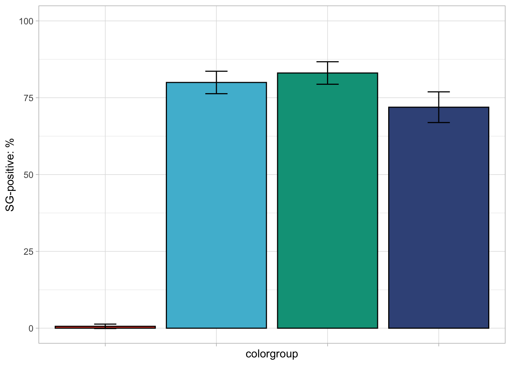
ggsave("./SG_datasel_cellSGtot_colplot.jpeg", SG_datasel_cellSGtot_colplot.plot, device = "jpeg", width = 60, height = 45, units = c("mm"))
ggsave("./SG_datasel_cellSGtot_colplot.ps", SG_datasel_cellSGtot_colplot.plot, device = "ps", width = 60, height = 45, units = c("mm"))Percentage of SG-positive cells. For Supplemental Figure S7B.
SG_datasel_cellcountplot.plot <- SG_datasel_cellSGtot.preplot %>% dplyr::mutate(., colorgroup = paste(NTF2, condition, sep = "_")) %>% left_join(., plate_expno_tribble)%>% ggplot(., aes(x = colorgroup, y = SGall, fill = colorgroup)) +
geom_col(colour = "black") +
theme_light() +
scale_x_discrete(labels = NULL) +
scale_y_continuous("cell count") +
scale_fill_npg() +
#scale_color_manual(values = c("black", "grey")) +
#scale_fill_npg() +
theme(legend.position="none") +
facet_grid(. ~ ., scales = "free_y")
print(SG_datasel_cellcountplot.plot)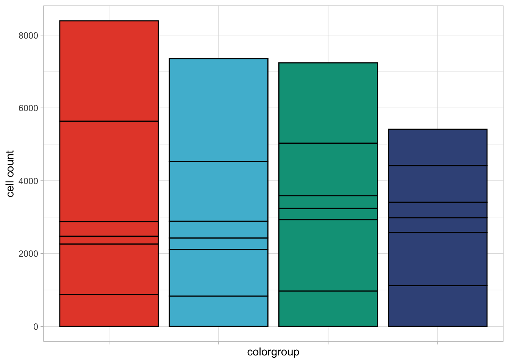
ggsave("./SG_datasel_cellcountplo.jpeg", SG_datasel_cellcountplot.plot, device = "jpeg", width = 60, height = 45, units = c("mm"))
ggsave("./SG_datasel_cellcountplo.ps", SG_datasel_cellcountplot.plot, device = "ps", width = 60, height = 45, units = c("mm"))Cell counts per experiment. For Supplemental Figure S7B.
initial_stats.plot <- egg::ggarrange(SG_datasel_cellcountplot.plot, SG_datasel_cellSGtot_colplot.plot, ncol = 2, widths = c(1,1))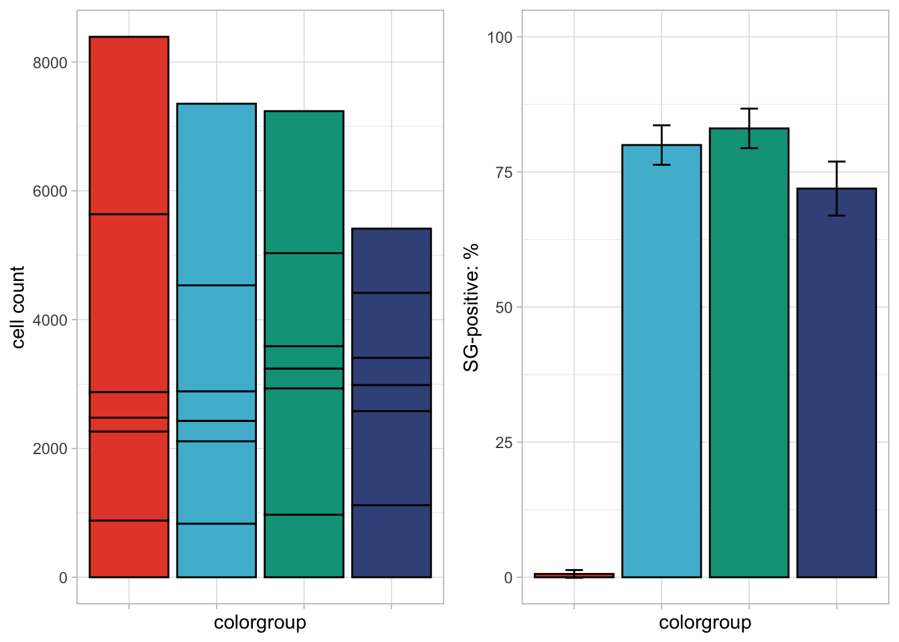
#(plotlist = list(), nrow = 1, ncol = 4, legend = "none")
ggsave(file="initial_stats.jpeg", plot=initial_stats.plot,device="jpeg", width = 90, height = 45, units = c("mm"))
ggsave(file="initial_stats.ps", plot=initial_stats.plot,device="ps", width = 90, height = 45, units = c("mm"))For Supplemental Figure S7B.
2.3 Analysis of cellular and SG parameters
Following code also comprises function for binning according to GFP intensities.
bin_size <- 0.1
ncell_number <- 9
plate_violingroups <- plate_expno_tribble
ntf2_violingroups <- tribble(~NTF2, ~condition, ~violingroup,
"aWildtype", "amock", 0,
"aWildtype", "bAS", 10,
"bH31A", "bAS", 20,
"cH31YH62Y", "bAS", 30)
median_exp_f <- function(df, selection){
df_out <- df %>% group_by(., plate) %>% dplyr::rename(., area = {{selection}}) %>% dplyr::summarize(., median = median(area))
return(df_out)
}
median_numberSGs_f <- function(df, selection){
df_out <- df %>% group_by(., plate) %>% dplyr::rename(., number = {{selection}}) %>% dplyr::summarize(., median = median(number))
return(df_out)
}
violin_trim_perc_f <- function(df, qcut, selection){
name_selection <- as.character({{selection}})
add_selection <- df %>% dplyr::select(., filterme = c(name_selection))
quantile_value <- df %>% dplyr::select(., c("plate", name_selection)) %>% dplyr::rename(., qsel = {{name_selection}}) %>% dplyr::group_by(., plate) %>% dplyr::summarize(., qcut_value = quantile(qsel, qcut))
df_out <- df %>% left_join(., quantile_value) %>% add_column(., add_selection) %>% dplyr::filter(., filterme < qcut_value) %>% dplyr::mutate(., GFPbins = cut(.data[[selection]], breaks = c(seq(0, 2.5, bin_size) )) ) %>% separate(., GFPbins, into = c("first", "second"), sep = ",") %>% separate(., second, into = c("GFPbin_number", "empty"), sep = "\\]") %>% dplyr::select(., !c("first", "empty")) %>% dplyr::mutate_at(., c("GFPbin_number"), as.numeric) #%>% dplyr::mutate_at(., c("GFPbins_id"), as.numeric)
return(df_out)
}
bin_GFPsum_f <- function(df){
df_out <- df %>% dplyr::group_by(., plate, GFPbin_number) %>% dplyr::summarize(., ncells = n(), SGarea = mean(SGperc_GFP), CaprinSGarea = mean(SGperc_Caprin)) %>% dplyr::filter(., ncells > ncell_number)
}
bin_GFPsum_all_f <- function(df){
df_out <- df %>% dplyr::group_by(., GFPbin_number) %>% dplyr::summarize(., ncells = n(), SGarea_median = median(SGperc_GFP), SGarea_q25 = quantile(SGperc_GFP, 0.25), SGarea_q75 = quantile(SGperc_GFP, 0.75), CaprinSGarea_median = median(SGperc_Caprin), CaprinSGarea_q25 = quantile(SGperc_Caprin, 0.25), CaprinSGarea_q75 = quantile(SGperc_Caprin, 0.75)) %>% pivot_longer(., cols = contains("area"), names_to = c("name", "par"), names_sep = "_", values_to = "value")
return(df_out)
}
median_bin_exp_f <- function(df, selection){
df_out <- df %>% group_by(., plate, GFPbin_number) %>% dplyr::rename(., area = {{selection}}) %>% dplyr::summarize(., median = median(area))
return(df_out)
}
median_bin_numberSGs_f <- function(df, selection){
df_out <- df %>% group_by(., plate, GFPbin_number) %>% dplyr::rename(., number = {{selection}}) %>% dplyr::summarize(., median = median(number))
return(df_out)
}
mean_sd_violin_f <- function(df){
df_out <- df %>% ungroup() %>% dplyr::group_by(., GFPbin_number) %>% nest() %>% dplyr::mutate(., nexp = purrr::map(data, ~nrow(.))) %>% unnest(., nexp) %>% unnest(., data) %>% dplyr::summarize(., SGarea_mean = mean(SGarea), SGarea_sd = sd(SGarea), CaprinSGarea_mean = mean(CaprinSGarea), CaprinSGarea_sd = sd(CaprinSGarea), ncells_count = sum(ncells), nexp_count = unique(nexp)) %>% replace_na(., list(SGarea_sd = 0,CaprinSGarea_sd =0 )) %>% dplyr::mutate(., SGarea_min = SGarea_mean - SGarea_sd, SGarea_max = SGarea_mean + SGarea_sd, CaprinSGarea_min = CaprinSGarea_mean - CaprinSGarea_sd, CaprinSGarea_max = CaprinSGarea_mean + CaprinSGarea_sd) %>% drop_na(., GFPbin_number)
return(df_out)
}
nexp_filter_f <- function(df, nexp_filter){
df_out <- df %>% dplyr::filter(., nexp_count > nexp_filter) %>% pivot_longer(., cols = contains(c("area", "nexp", "ncells")), names_to = c("name", "par"), names_sep = "_", values_to = "value")
return(df_out)
}
SG_datasel_unnested_ntf2_sum_GFPi_filtered.preplot <- SG_datasel_unnested_ntf2_sum_GFPi.nested %>% dplyr::mutate(., qcut = 0.95, selection1 = "GFPi_norm") %>% dplyr::mutate(., data_sum_violintrim = purrr::pmap(list(data_sum_GFPnorm, qcut, selection1), violin_trim_perc_f)) %>% dplyr::select(., NTF2, condition, data_sum_violintrim) %>% dplyr::mutate(., data_sum_violintrim_binned = purrr::pmap(list(data_sum_violintrim), bin_GFPsum_f)) %>% dplyr::mutate(., data_sum_violintrim_binned_mean_nfil = purrr::pmap(list(data_sum_violintrim_binned), mean_sd_violin_f)) %>% dplyr::mutate(., nexp_filter = 2) %>% dplyr::mutate(., data_sum_violintrim_binned_mean = purrr::pmap(list(data_sum_violintrim_binned_mean_nfil, nexp_filter), nexp_filter_f)) %>% dplyr::mutate(., data_sum_violintrim_binned_all = purrr::pmap(list(data_sum_violintrim), bin_GFPsum_all_f))
SG_datasel_unnested_ntf2_sum_GFPi_violin.preplot <- SG_datasel_unnested_ntf2_sum_GFPi_filtered.preplot %>% unnest(., cols = c("data_sum_violintrim")) %>% left_join(., plate_violingroups) %>% left_join(., ntf2_violingroups) %>% dplyr::mutate(., violingroupx = violingroup + experiment)
SG_datasel_unnested_ntf2_sum_GFPi_boxplot.preplot <- SG_datasel_unnested_ntf2_sum_GFPi_filtered.preplot %>% dplyr::mutate(., SGareasel = "SGarea", CaprinSGareasel = "CaprinSGarea", SGcount = "Children_SG_Count", GFPi_1000sel = "GFPi_norm", GFPi_1000sel = "GFPi_norm", SGperc_GFPsel = "SGperc_GFP", AreaShape_Area = "AreaShape_Area" ) %>% dplyr::mutate(., data_sum_SGmedianexp = purrr::pmap(list(data_sum_violintrim, SGareasel), median_exp_f), data_sum_CaprinSGmedianexp = purrr::pmap(list(data_sum_violintrim, CaprinSGareasel), median_exp_f), data_sum_SGcountexp = purrr::pmap(list(data_sum_violintrim, SGcount), median_numberSGs_f), data_sum_GFPiexp = purrr::pmap(list(data_sum_violintrim, GFPi_1000sel), median_numberSGs_f), data_sum_SGperc_GFPexp = purrr::pmap(list(data_sum_violintrim, SGperc_GFPsel), median_numberSGs_f), data_sum_cytoarea = purrr::pmap(list(data_sum_violintrim, AreaShape_Area), median_exp_f) ) %>% dplyr::select(., NTF2, condition, data_sum_SGmedianexp, data_sum_CaprinSGmedianexp, data_sum_SGcountexp, data_sum_GFPiexp, data_sum_SGperc_GFPexp, data_sum_cytoarea)
SG_datasel_unnested_ntf2_sum_GFPi_SG_boxplot.preplot <- SG_datasel_unnested_ntf2_sum_GFPi_boxplot.preplot %>% unnest(., cols = c("data_sum_SGperc_GFPexp")) %>% left_join(., plate_violingroups) %>% left_join(., ntf2_violingroups) %>% dplyr::mutate(., SGperc_GFP = median) %>% dplyr::mutate(., violingroupx = violingroup + experiment)
#%>% dplyr::select(., NTF2, condition, data_sum) SG_datasel_unnested_ntf2_sum_GFPi_SGviolin.plot <- SG_datasel_unnested_ntf2_sum_GFPi_violin.preplot %>% dplyr::mutate(., colorgroup = paste(NTF2, condition, sep = "_")) %>% ggplot(data = .) +
geom_violin(aes(x = factor(violingroupx), y = SGperc_GFP), scale = "width") +
geom_point(data = SG_datasel_unnested_ntf2_sum_GFPi_SG_boxplot.preplot %>% dplyr::mutate(., colorgroup = paste(NTF2, condition, sep = "_")), aes(x = factor(violingroupx), y = SGperc_GFP, colour = factor(colorgroup) ), size = 3) +
#coord_cartesian(ylim = c(0, 800)) +
scale_y_continuous("GFP-G3BP1 SG area: %") + #breaks = c(0, 500, 1000)) +
#scale_y_continuous("SGcount/cell") +
theme_minimal() +
theme(legend.position = "none") +
scale_color_npg() +
facet_grid(. ~ ., scales = "free_y")
print(SG_datasel_unnested_ntf2_sum_GFPi_SGviolin.plot)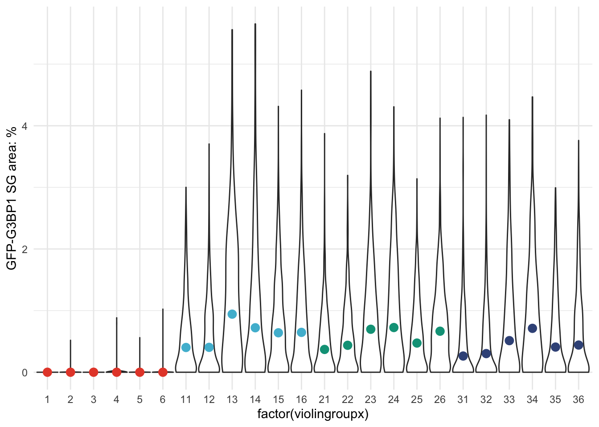
ggsave("./SG_datasel_unnested_ntf2_sum_GFPi_violinSG.jpeg", SG_datasel_unnested_ntf2_sum_GFPi_SGviolin.plot, device = "jpeg", width = 120, height = 45, units = c("mm"))
ggsave("./SG_datasel_unnested_ntf2_sum_GFPi_violinSG.ps", SG_datasel_unnested_ntf2_sum_GFPi_SGviolin.plot, device = "ps", width = 120, height = 45, units = c("mm"))Violinplot of SG areas versus cells. Color code as in manuscript. Legend removed here. Not shown in ms.
2.3.1 other plots
2.3.1.1 Size of cytoplasm
SG_datasel_unnested_ntf2_sum_cyotsize_boxplot.preplot <- SG_datasel_unnested_ntf2_sum_GFPi_boxplot.preplot %>% unnest(., cols = c("data_sum_cytoarea")) %>% left_join(., plate_violingroups) %>% left_join(., ntf2_violingroups) %>% dplyr::mutate(., AreaShape_Area = median) %>% dplyr::mutate(., violingroupx = violingroup + experiment)
#%>% dplyr::select(., NTF2, condition, data_sum)
SG_datasel_unnested_ntf2_sum_cyotsize.plot <- SG_datasel_unnested_ntf2_sum_GFPi_violin.preplot %>% dplyr::mutate(., colorgroup = paste(NTF2, condition, sep = "_")) %>% ggplot(data = .) +
geom_violin(aes(x = factor(violingroupx), y = AreaShape_Area), scale = "width") +
geom_point(data = SG_datasel_unnested_ntf2_sum_cyotsize_boxplot.preplot %>% dplyr::mutate(., colorgroup = paste(NTF2, condition, sep = "_")), aes(x = factor(violingroupx), y = AreaShape_Area, colour = factor(colorgroup) ), size = 3) +
#coord_cartesian(ylim = c(0, 800)) +
scale_y_continuous("cyto size: um2", breaks = c(250/area_um, 500/area_um, 750/area_um, 1000/area_um) , labels = function(breaks) ((breaks*area_um))) + #breaks = c(0, 500, 1000)) +
#coord_cartesian(ylim = c(0,)) +
theme_minimal() +
theme(legend.position = "none") +
scale_color_npg() +
facet_grid(. ~ ., scales = "free_y")
ggsave("./SG_datasel_unnested_ntf2_sum_cyotsize.jpeg", SG_datasel_unnested_ntf2_sum_cyotsize.plot, device = "jpeg", width = 160, height = 45, units = c("mm"))
ggsave("./SG_datasel_unnested_ntf2_sum_cyotsize.ps", SG_datasel_unnested_ntf2_sum_cyotsize.plot, device = "ps", width = 160, height = 45, units = c("mm"))SG_datasel_unnested_ntf2_sum_cyotsize_boxplot.preplot <- SG_datasel_unnested_ntf2_sum_GFPi_boxplot.preplot %>% unnest(., cols = c("data_sum_cytoarea")) %>% left_join(., plate_violingroups) %>% left_join(., ntf2_violingroups) %>% dplyr::mutate(., AreaShape_Area = median) %>% dplyr::mutate(., violingroupx = violingroup + experiment)
#%>% dplyr::select(., NTF2, condition, data_sum)
SG_datasel_unnested_ntf2_sum_cyotsizeLegend.plot <- SG_datasel_unnested_ntf2_sum_GFPi_violin.preplot %>% dplyr::mutate(., colorgroup = paste(NTF2, condition, sep = "_")) %>% ggplot(data = .) +
geom_violin(aes(x = factor(violingroupx), y = AreaShape_Area), scale = "width") +
geom_point(data = SG_datasel_unnested_ntf2_sum_cyotsize_boxplot.preplot %>% dplyr::mutate(., colorgroup = paste(NTF2, condition, sep = "_")), aes(x = factor(violingroupx), y = AreaShape_Area, colour = factor(colorgroup) ), size = 3) +
#coord_cartesian(ylim = c(0, 800)) +
scale_y_continuous("cyto size: um2", breaks = c(250/area_um, 500/area_um, 750/area_um, 1000/area_um) , labels = function(breaks) ((breaks*area_um))) + #breaks = c(0, 500, 1000)) +
#coord_cartesian(ylim = c(0,)) +
theme_minimal() +
#theme(legend.position = "none") +
scale_color_npg() +
facet_grid(. ~ ., scales = "free_y")
print(SG_datasel_unnested_ntf2_sum_cyotsizeLegend.plot)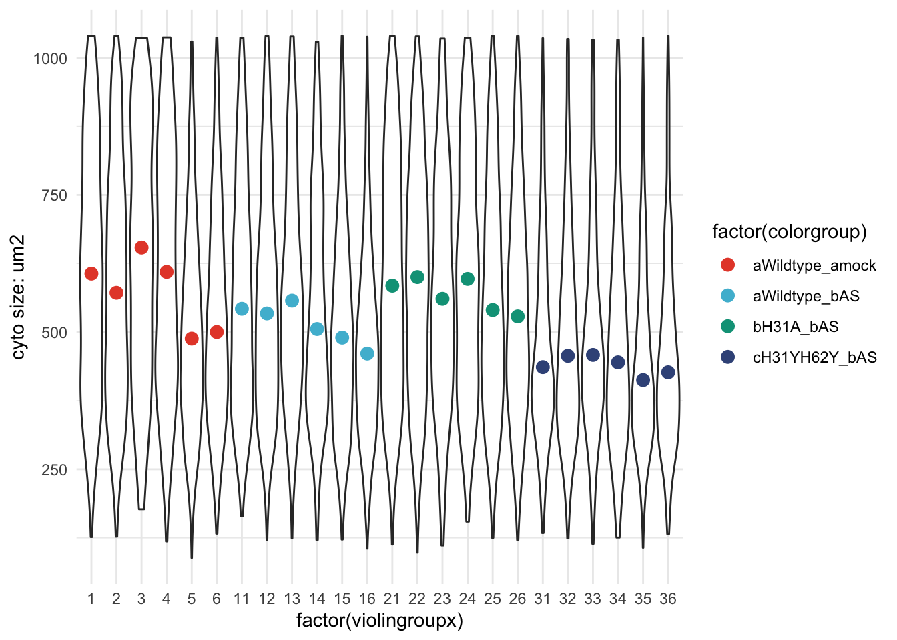
ggsave("./SG_datasel_unnested_ntf2_sum_cyotsizeLegend.jpeg", SG_datasel_unnested_ntf2_sum_cyotsizeLegend.plot, device = "jpeg", width = 160, height = 45, units = c("mm"))
ggsave("./SG_datasel_unnested_ntf2_sum_cyotsizeLegend.ps", SG_datasel_unnested_ntf2_sum_cyotsizeLegend.plot, device = "ps", width = 160, height = 45, units = c("mm"))Violinplot of cytoplasm size of cells in each dataset. Color code as in manuscript. Not shown in ms.
2.3.1.2 GFPintensity distribution
SG_datasel_unnested_ntf2_sum_GFPi_GFPi_boxplot.preplot <- SG_datasel_unnested_ntf2_sum_GFPi_boxplot.preplot %>% unnest(., cols = c("data_sum_GFPiexp")) %>% dplyr::mutate(., GFPi_norm = median) %>% left_join(., plate_violingroups) %>% left_join(., ntf2_violingroups) %>% dplyr::mutate(., violingroupx = violingroup + experiment)
#%>% dplyr::select(., NTF2, condition, data_sum)
SG_datasel_unnested_ntf2_sum_GFPi_GFPiviolin.plot <- SG_datasel_unnested_ntf2_sum_GFPi_violin.preplot %>% dplyr::mutate(., colorgroup = paste(NTF2, condition, sep = "_")) %>% ggplot(data = .) +
geom_violin(aes(x = factor(violingroupx), y = GFPi_norm), scale = "width") +
geom_point(data = SG_datasel_unnested_ntf2_sum_GFPi_GFPi_boxplot.preplot %>% dplyr::mutate(., colorgroup = paste(NTF2, condition, sep = "_")), aes(x = factor(violingroupx), y = GFPi_norm, colour = factor(colorgroup) ), size = 3) +
#coord_cartesian(ylim = c(0, 800)) +
scale_y_continuous("GFPi") + #breaks = c(0, 500, 1000)) +
#scale_y_continuous("SGcount/cell") +
theme_minimal() +
theme(legend.position = "none") +
coord_cartesian(ylim = c(0,4)) +
scale_color_npg() +
facet_grid(. ~ .)
print(SG_datasel_unnested_ntf2_sum_GFPi_GFPiviolin.plot)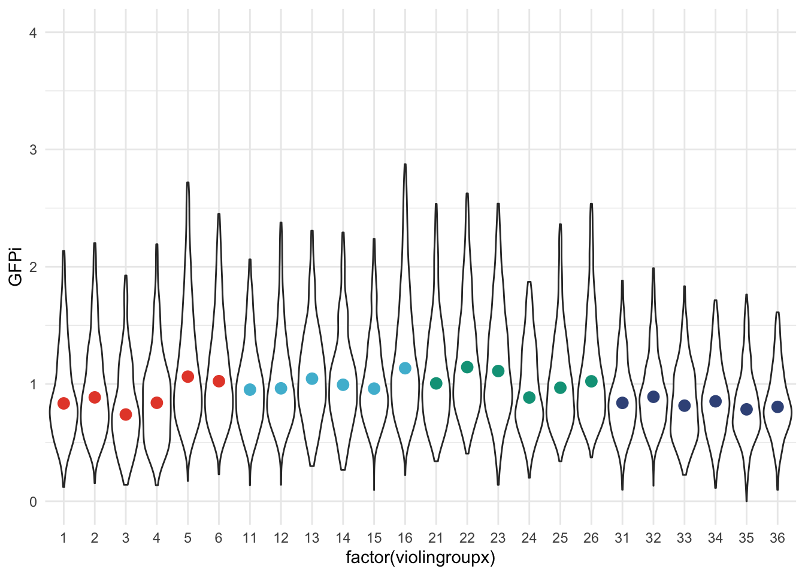
ggsave("./SG_datasel_unnested_ntf2_sum_GFPi_violinGFPi.jpeg", SG_datasel_unnested_ntf2_sum_GFPi_GFPiviolin.plot, device = "jpeg", width = 120, height = 45, units = c("mm"))
ggsave("./SG_datasel_unnested_ntf2_sum_GFPi_violinGFPi.ps", SG_datasel_unnested_ntf2_sum_GFPi_GFPiviolin.plot, device = "ps", width = 120, height = 45, units = c("mm"))Violinplot of GFP intensities. Color code as in manuscript. For Supplemental Figure S7.
2.4 SGarea versus GFPin
2.4.1 Violinplot of GFP intensities
bin_sel <- 4
SG_facets <- tribble(~name, ~facetname,
"SGarea", "a.G3BP",
"CaprinSGarea", "b.Caprin")
SG_datasel_unnested_ntf2_sum_GFPi_filtered_mean.preplot <- SG_datasel_unnested_ntf2_sum_GFPi_filtered.preplot %>% dplyr::select(NTF2, condition, data_sum_violintrim_binned_mean) %>% unnest(., data_sum_violintrim_binned_mean) %>% dplyr::mutate(., colorgroup = paste(NTF2, condition, sep = "_")) %>% dplyr::filter(., GFPbin_number < bin_sel) %>% dplyr::filter(., par != "count")
SG_datasel_unnested_ntf2_sum_GFPi_filtered_exp.preplot <- SG_datasel_unnested_ntf2_sum_GFPi_filtered.preplot %>% dplyr::select(NTF2, condition, data_sum_violintrim_binned) %>% unnest(., data_sum_violintrim_binned) %>% dplyr::mutate(., colorgroup = paste(NTF2, condition, sep = "_")) %>% dplyr::mutate(., plategroup = paste(NTF2, condition, plate, sep = "_")) %>% pivot_longer(., cols = contains("area"), names_to = c("name"), values_to = "value") %>% dplyr::filter(., GFPbin_number < bin_sel)
SG_datasel_unnested_ntf2_sum_GFPi_filtered_all.preplot <- SG_datasel_unnested_ntf2_sum_GFPi_filtered.preplot %>% dplyr::select(NTF2, condition, data_sum_violintrim_binned_all) %>% unnest(., data_sum_violintrim_binned_all) %>% dplyr::mutate(., colorgroup = paste(NTF2, condition, sep = "_")) %>% dplyr::filter(., GFPbin_number < bin_sel)
SG_datasel_unnested_ntf2_sum_GFPi_filtered_all.plot <- SG_datasel_unnested_ntf2_sum_GFPi_filtered_mean.preplot %>% left_join(., SG_facets) %>% ggplot(data = .) +
geom_line(data = . %>% dplyr::filter(., par == "mean") %>% left_join(., SG_facets), aes(x = GFPbin_number, y = value), colour = "black", size = 2 ) +
#geom_line(data = SG_datasel_unnested_ntf2_sum_GFPi_filtered_exp.preplot %>% left_join(., SG_facets) %>% left_join(., ncells_alpha_line) %>% dplyr::filter(., ncell_cut > 200), aes(x = GFPbin_number, y = value, colour = factor(colorgroup), group = plategroup), size = 0.5 ) +
geom_point(data = SG_datasel_unnested_ntf2_sum_GFPi_filtered_exp.preplot %>% group_by(., NTF2, condition, colorgroup, GFPbin_number, name) %>% left_join(., SG_facets), aes(x = GFPbin_number, y = value, colour = factor(plate))) +
#geom_ribbon(data = SG_datasel_unnested_ntf2_sum_GFPi_filtered_exp.preplot %>% group_by(., NTF2, condition, colorgroup, GFPbin_number, name) %>% dplyr::summarize(., ymin = min(value), ymax = (max(value))) %>% left_join(., SG_facets), aes(x = GFPbin_number, ymin = ymin, ymax = ymax, fill = factor(colorgroup)), alpha = 0.25 ) +
scale_y_continuous("SG area: %", n.breaks = 3, minor_breaks = NULL) + #breaks = c(0, 500, 1000)) +
scale_x_continuous("GFPi", breaks = c(1,2), minor_breaks = NULL) +
theme_minimal() +
theme(legend.position = "none") +
scale_color_brewer(palette = "Paired") +
#scale_fill_npg() +
facet_grid(facetname ~ colorgroup)
print(SG_datasel_unnested_ntf2_sum_GFPi_filtered_all.plot)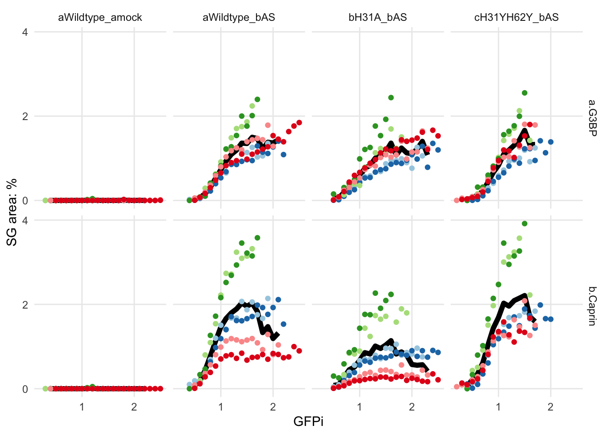
ggsave("./SG_datasel_unnested_ntf2_sum_GFPi_line_all.jpeg", SG_datasel_unnested_ntf2_sum_GFPi_filtered_all.plot, device = "jpeg", width = 160, height = 90, units = c("mm"))
ggsave("./SG_datasel_unnested_ntf2_sum_GFPi_line_all.ps", SG_datasel_unnested_ntf2_sum_GFPi_filtered_all.plot, device = "ps", width = 160, height = 90, units = c("mm"))SG areas versus GFP intensities, for each experiment. Not shown in ms.
2.4.2 fitting dose-response curves
Data were normalized as described in manuscript. Apparent dose-response curves were obtained by plotting the median SG area of each bin against its respective Frel-value, and analyzed applying the general asymmetric five-parameter logistic model as implemented in the drc package. In the first step, datasets within a single channel were normalized to the respective fitted maximal response of the wildtype dose-response curve for final analysis.
plates <- SG_datasel_unnested_ntf2_sum_GFPi_filtered_exp.preplot %>% dplyr::group_by(plate) %>% dplyr::summarize() %>% deframe()
predict_values <- expand.grid(GFPbin_number =c(seq(0,2.5, 0.01)), plate = plates)
predict_values_augment <- predict_values %>% as_tibble(.)
drm_predict_f <- function(df){
data <- df
drm_predict <- predict(data, predict_values) %>% as_tibble()
drm_predict_out <- predict_values %>% as_tibble() %>% add_column(., drm_predict)
return(drm_predict_out)
}
predict_norm_values <- expand.grid(GFPbin_number =c(seq(0,2.5, 0.01)))
drm_predict_norm_f <- function(df){
data <- df
drm_predict <- predict(data, predict_norm_values) %>% as_tibble()
drm_predict_out <- predict_values %>% as_tibble() %>% add_column(., drm_predict)
return(drm_predict_out)
}
drm_f <- function(df){
data <- df
drm_out <- drm(value ~ GFPbin_number, plate, data = data, fct = L.5(), pmodels = list(~1, ~plate-1, ~plate-1, ~1, ~1), lowerl = c(-Inf, 0, -Inf, -Inf, -Inf))
return(drm_out)
}
combine_data_pred_f <- function(data, drm_pred){
data_groups <- data %>% dplyr::group_by(., plate, colorgroup, plategroup) %>% dplyr::summarize()
drm_pred_out <- drm_pred %>% left_join(., data_groups)
return(drm_pred_out)
}
SG_data_all <- SG_datasel_unnested_ntf2_sum_GFPi_filtered_exp.preplot %>% group_by(., NTF2, condition, name) %>% nest()
SG_DR_bAS <- SG_data_all %>% dplyr::filter(., condition == "bAS") %>% dplyr::mutate(., drm_out = purrr::pmap(list(data),drm_f)) %>% dplyr::mutate(., drm_pred_temp = purrr::pmap(list(drm_out),drm_predict_f)) %>% dplyr::mutate(., drm_pred = purrr::pmap(list(data, drm_pred_temp),combine_data_pred_f)) %>% dplyr::mutate(., drm_tidy = purrr::pmap(list(drm_out),tidy))SG_DR_bAS.plot <- SG_DR_bAS %>% left_join(., SG_facets) %>% ggplot() +
geom_line(data = . %>% dplyr::select(., !c("data", "drm_out")) %>% unnest(., drm_pred) %>% ungroup(.) %>% dplyr::filter(., NTF2 == "aWildtype" & condition == "bAS"), aes(x = GFPbin_number, y = value, colour = factor(plate)), size = 1 ) +
geom_point(data = . %>% dplyr::select(., !c("drm_out", "drm_pred")) %>% unnest(., data), aes(x = GFPbin_number, y = value, colour = factor(plate)), size = 2 ) +
#geom_line(data = SG_datasel_unnested_ntf2_sum_GFPi_filtered_exp.preplot %>% left_join(., SG_facets) %>% left_join(., ncells_alpha_line) %>% dplyr::filter(., ncell_cut > 200), aes(x = GFPbin_number, y = value, colour = factor(colorgroup), group = plategroup), size = 0.5 ) +
#geom_ribbon(data = SG_datasel_unnested_ntf2_sum_GFPi_filtered_exp.preplot %>% group_by(., NTF2, condition, colorgroup, GFPbin_number, name) %>% dplyr::summarize(., ymin = min(value), ymax = (max(value))) %>% left_join(., SG_facets), aes(x = GFPbin_number, ymin = ymin, ymax = ymax, fill = factor(colorgroup)), alpha = 0.25 ) +
scale_y_continuous("SG area: %", n.breaks = 3, minor_breaks = NULL) + #breaks = c(0, 500, 1000)) +
scale_x_continuous("GFPi", breaks = c(1,2), minor_breaks = NULL) +
theme_minimal() +
#theme(legend.position = "none") +
scale_color_brewer(palette = "Paired") +
#scale_fill_npg() +
facet_grid(facetname ~ colorgroup)
print(SG_DR_bAS.plot)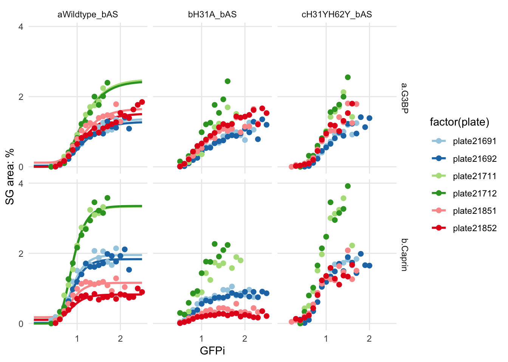
ggsave("./SG_DR_bAS.jpeg", SG_DR_bAS.plot, device = "jpeg", width = 160, height = 90, units = c("mm"))
ggsave("./SG_DR_bAS.ps", SG_DR_bAS.plot, device = "ps", width = 160, height = 90, units = c("mm"))SG areas plotted against GFP intensity per binned cells for each construct and dataset. DRC fit to wild-type for normalization. For Supplemental Figure S7.
2.4.3 normalize based on max response
Then data were normalized to max response of wild-type.
plate_response_norm <- SG_DR_bAS %>% dplyr::select(., NTF2, condition, name, drm_tidy) %>% unnest(., drm_tidy) %>% dplyr::filter(., NTF2 == "aWildtype", term == "d") %>% dplyr::select(., NTF2, condition, name, curve, value = estimate) %>% dplyr::mutate(., plate = str_replace(curve, "plateplate", "plate")) %>% ungroup() %>% dplyr::select(., !c("curve", "NTF2", "condition")) %>% dplyr::select(., name, norm = value, plate) %>% group_by(., name) %>% nest(normalization = !c("name"))
SGarea_normalize_f <- function(df, normalization){
df_out <- df %>% left_join(., normalization) %>% dplyr::mutate(., value_old = value) %>% dplyr::select(., !c("value")) %>% dplyr::mutate(., value = value_old/norm) %>%
return(df_out)
}
SG_DR_bAS_norm <- SG_data_all %>% left_join(., plate_response_norm) %>% dplyr::mutate(., data_norm = purrr::pmap(list(data,normalization), SGarea_normalize_f)) %>% dplyr::mutate(., data_norm_select = purrr::pmap(list(data,normalization), SGarea_normalize_f))SG_DR_bAS_norm.plot <- SG_DR_bAS_norm %>% left_join(., SG_facets) %>% ggplot() +
#geom_line(data = . %>% dplyr::select(., c("NTF2", "condition", "name", "data_norm")) %>% unnest(., data_norm), aes(x = GFPbin_number, y = value, colour = factor(plate)), size = 1 ) +
geom_point(data = . %>% dplyr::select(., c("NTF2", "condition", "name", "facetname", "data_norm")) %>% unnest(., data_norm), aes(x = GFPbin_number, y = value, colour = factor(plate)), size = 2 ) +
#geom_line(data = SG_datasel_unnested_ntf2_sum_GFPi_filtered_exp.preplot %>% left_join(., SG_facets) %>% left_join(., ncells_alpha_line) %>% dplyr::filter(., ncell_cut > 200), aes(x = GFPbin_number, y = value, colour = factor(colorgroup), group = plategroup), size = 0.5 ) +
#geom_ribbon(data = SG_datasel_unnested_ntf2_sum_GFPi_filtered_exp.preplot %>% group_by(., NTF2, condition, colorgroup, GFPbin_number, name) %>% dplyr::summarize(., ymin = min(value), ymax = (max(value))) %>% left_join(., SG_facets), aes(x = GFPbin_number, ymin = ymin, ymax = ymax, fill = factor(colorgroup)), alpha = 0.25 ) +
scale_y_continuous("normalized SG area", n.breaks = 3, minor_breaks = NULL) + #breaks = c(0, 500, 1000)) +
scale_x_continuous("GFPi", breaks = c(1,2), minor_breaks = NULL) +
theme_minimal() +
#theme(legend.position = "none") +
scale_color_brewer(palette = "Paired") +
#scale_fill_npg() +
facet_grid(facetname ~ colorgroup)
print(SG_DR_bAS_norm.plot)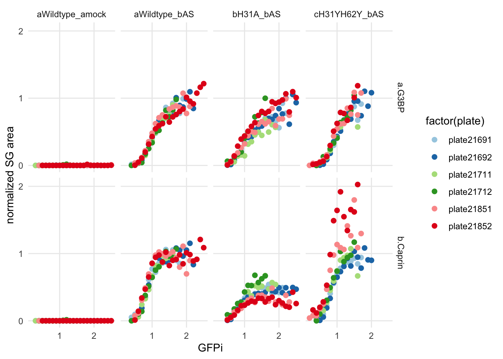
ggsave("./SG_DR_bAS_norm.jpeg", SG_DR_bAS_norm.plot, device = "jpeg", width = 160, height = 90, units = c("mm"))
ggsave("./SG_DR_bAS_norm.ps", SG_DR_bAS_norm.plot, device = "ps", width = 160, height = 90, units = c("mm"))SG areas plotted against GFP intensity per binned cells for each construct and dataset. Normalized to wild-type as described. Not shown in ms. Two H31YH62Y Caprin-1 channel datasets (reds) appear as outliers compared to the others.
2.4.4 re-analyse normalized data
Code to select datasets to be included in final fit.
drm_norm_f <- function(df){
data <- df
drm_out <- drm(value ~ GFPbin_number, plate, data = data, fct = L.5(), pmodels = list(~1, ~1, ~1, ~1, ~1), lowerl = c(-Inf, 0, -Inf, -Inf, -Inf), upperl = c(Inf, 0.01, Inf, Inf, Inf))
return(drm_out)
}
drm_predictnorm_f <- function(df, predict_values){
data <- df
drm_predict <- predict(data, predict_values) %>% as_tibble()
drm_predict_out <- predict_values %>% as_tibble() %>% add_column(., drm_predict)
return(drm_predict_out)
}
drm_predictnorm_conf_f <- function(df, predict_values){
data <- df
drm_predict <- predict(data, predict_values, interval = "confidence", vcov.dcr=sandwich) %>% as_tibble()
drm_predict_out <- predict_values %>% as_tibble() %>% add_column(., drm_predict)
return(drm_predict_out)
}
unique_curve_f <- function(df){
df_out <- df %>% dplyr::select(., !c("plate")) %>% unique(.)
return(df_out)
}
###modify function
filter_data_f <- function(data, filtername){
data_out <- data %>% dplyr::mutate_at(c("plate"), ~str_replace_all(., pattern = {{filtername}}, replacement = "filterme")) %>% dplyr::filter(., plate != "filterme")
return(data_out)
}
grid_predictvalues_f <- function(data){
plates <- data %>% dplyr::group_by(plate) %>% dplyr::summarize() %>% deframe()
predict_values <- expand.grid(GFPbin_number =c(seq(0,2.5, 0.01)), plate = plates)
return(predict_values)
}
augment_f <- function(df1, predict_values_augment){
data_out <- df1 %>% augment(., newdata = predict_values_augment, conf.int = TRUE)
return(data_out)
}
###apply right_join instead
filter_dataset <- tribble(~NTF2, ~name, ~filtername,
"cH31YH62Y", "CaprinSGarea", "plate21851|plate21852")
SG_DR_bAS_norm_DRre <- SG_DR_bAS_norm %>% left_join(., filter_dataset) %>% unnest(., filtername) %>% replace_na(., list(filtername = "none")) %>% dplyr::mutate(., data_normOLD = data_norm) %>% dplyr::mutate(., data_filtered = purrr::pmap(list(data_norm, filtername),filter_data_f)) %>% dplyr::select(., NTF2, condition, name, data, normalization, data_normOLD, data_norm = data_filtered) %>% dplyr::mutate(., predict_values = purrr::map(data_norm, ~grid_predictvalues_f(.)))%>% dplyr::filter(., condition == "bAS") %>% dplyr::mutate(., drm_out = purrr::pmap(list(data_norm),drm_norm_f)) %>% dplyr::mutate(., drm_pred_temp = purrr::pmap(list(drm_out, predict_values),drm_predictnorm_f), drm_predconf_temp = purrr::pmap(list(drm_out, predict_values),drm_predictnorm_conf_f)) %>% dplyr::mutate(., drm_pred = purrr::pmap(list(data, drm_predconf_temp),combine_data_pred_f)) %>% dplyr::mutate(., drm_tidy = purrr::pmap(list(drm_out),tidy)) plategroup_join <- SG_data_all %>% left_join(., SG_facets) %>% dplyr::select(., c("NTF2", "condition", "name", "facetname", "data")) %>% unnest(., data) %>% group_by(., NTF2, condition, facetname, plate, colorgroup, plategroup) %>% dplyr::summarize()
colorgroup_join <- plategroup_join %>% ungroup() %>% dplyr::select(., !c("plate", "plategroup")) %>% unique()
SG_DR_bAS_norm_DRre.plot <- SG_DR_bAS_norm_DRre %>% left_join(., SG_facets) %>% ggplot() +
#geom_line(data = . %>% dplyr::select(., c("NTF2", "condition", "name", "data_norm")) %>% unnest(., data_norm), aes(x = GFPbin_number, y = value, colour = factor(plate)), size = 1 ) +
geom_point(data = . %>% left_join(., SG_facets) %>% dplyr::select(., c("NTF2", "condition", "name", "facetname", "data_normOLD")) %>% unnest(., data_normOLD), aes(x = GFPbin_number, y = value, color = factor(colorgroup)), shape = 1, size = 1 ) +
geom_point(data = . %>% left_join(., SG_facets) %>% dplyr::select(., c("NTF2", "condition", "name", "facetname", "data_norm")) %>% unnest(., data_norm), aes(x = GFPbin_number, y = value, color = factor(colorgroup)), size = 1 ) +
geom_line(data = . %>% dplyr::select(., c("NTF2", "condition", "name", "facetname", "drm_predconf_temp")) %>% unnest(., drm_predconf_temp) %>% dplyr::mutate(., value = Prediction) %>% left_join(., colorgroup_join), aes(x = GFPbin_number, y = value, group = colorgroup), colour = "black", size = 1 ) +
geom_point(data = SG_DR_bAS_norm %>% left_join(., SG_facets) %>% dplyr::select(., c("NTF2", "condition", "name", "facetname", "data_norm")) %>% unnest(., data_norm) %>% dplyr::filter(., NTF2 == "aWildtype", condition == "amock"), aes(x = GFPbin_number, y = value, fill = factor(colorgroup), color = factor(colorgroup)), size = 1 ) +
#geom_ribbon(data = . %>% dplyr::select(., c("NTF2", "condition", "name", "facetname", "drm_augment_unique")) %>% unnest(., drm_augment_unique) %>% dplyr::mutate(., value = .fitted) %>% left_join(., colorgroup_join), aes(x = GFPbin_number, ymin = .lower, ymax = .upper, fill = factor(colorgroup)), alpha = 0.25 ) +
#coord_cartesian(ylim(0, 1.5)) +
scale_y_continuous("normalized SG area", minor_breaks = NULL) + #, n.breaks = 3, minor_breaks = NULL) + #breaks = c(0, 500, 1000)) +
scale_x_continuous("GFPi", breaks = c(1,2), minor_breaks = NULL) +
coord_cartesian(xlim = c(0,2.5), ylim = c(0,1.5)) +
theme_minimal() +
theme(legend.position = "none") +
#scale_color_brewer(palette = "Paired") +
scale_color_npg() +
facet_grid(facetname ~ colorgroup)
print(SG_DR_bAS_norm_DRre.plot)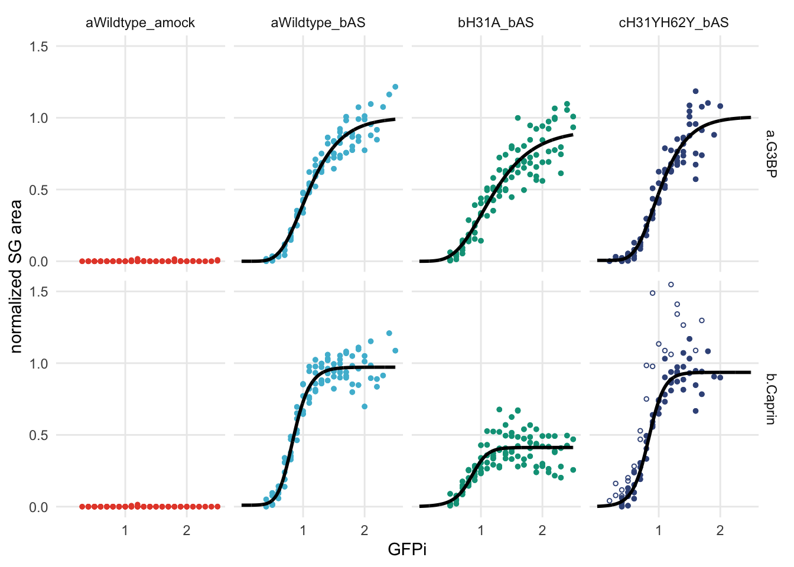
ggsave("./SG_DR_bAS_norm_DRre.jpeg", SG_DR_bAS_norm_DRre.plot, device = "jpeg", width = 160, height = 90, units = c("mm"))
ggsave("./SG_DR_bAS_norm_DRre.ps", SG_DR_bAS_norm_DRre.plot, device = "ps", width = 160, height = 90, units = c("mm"))Final fit as shown in Figure 5. Separate panels for each construct.
SG_DR_bAS_norm_DRre_combined.plot <- SG_DR_bAS_norm_DRre %>% left_join(., SG_facets) %>% ggplot() +
#geom_line(data = . %>% dplyr::select(., c("NTF2", "condition", "name", "data_norm")) %>% unnest(., data_norm), aes(x = GFPbin_number, y = value, colour = factor(plate)), size = 1 ) +
geom_point(data = SG_DR_bAS_norm %>% left_join(., SG_facets) %>% dplyr::select(., c("NTF2", "condition", "name", "facetname", "data_norm")) %>% unnest(., data_norm), aes(x = GFPbin_number, y = value, color = factor(colorgroup)), size = 1, alpha = 0.3 ) +
geom_line(data = . %>% dplyr::select(., c("NTF2", "condition", "name", "facetname", "drm_predconf_temp")) %>% unnest(., drm_predconf_temp) %>% dplyr::mutate(., value = Prediction) %>% left_join(., colorgroup_join), aes(x = GFPbin_number, y = value, group = colorgroup, color = factor(colorgroup)), size = 1.5 ) +
#geom_ribbon(data = . %>% dplyr::select(., c("NTF2", "condition", "name", "facetname", "drm_augment_unique")) %>% unnest(., drm_augment_unique) %>% dplyr::mutate(., value = .fitted) %>% left_join(., colorgroup_join), aes(x = GFPbin_number, ymin = .lower, ymax = .upper, fill = factor(colorgroup)), alpha = 0.25 ) +
scale_y_continuous("normalized SG area", minor_breaks = NULL) + #breaks = c(0, 500, 1000)) +
scale_x_continuous("GFPi", breaks = c(1,2), minor_breaks = NULL) +
theme_minimal() +
theme(legend.position = "none") +
#scale_color_brewer(palette = "Paired") +
scale_color_npg() +
facet_grid(facetname ~ .)
print(SG_DR_bAS_norm_DRre_combined.plot)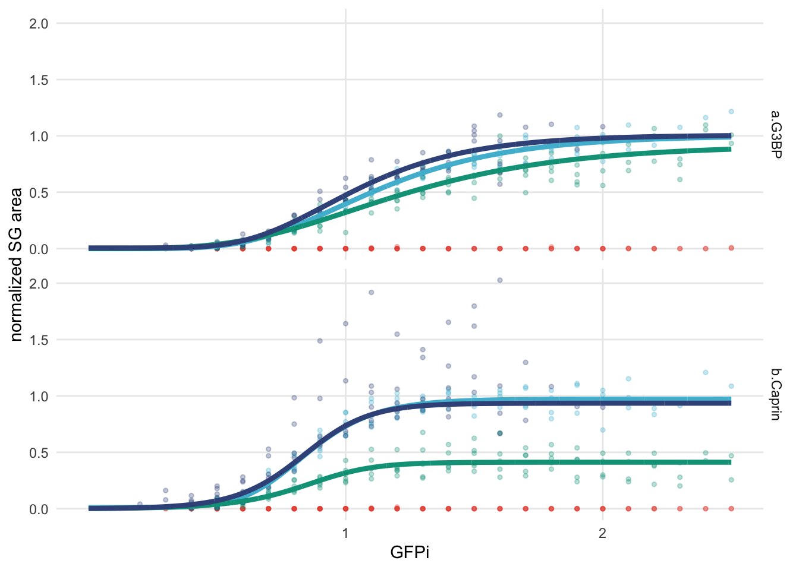
ggsave("./SG_DR_bAS_norm_DRre_combined.jpeg", SG_DR_bAS_norm_DRre_combined.plot, device = "jpeg", width = 60, height = 90, units = c("mm"))
ggsave("./SG_DR_bAS_norm_DRre_combined.ps", SG_DR_bAS_norm_DRre_combined.plot, device = "ps", width = 60, height = 90, units = c("mm"))Final fit as shown in Figure 5. Constructs combined.
SG_DR_bAS_norm_DRre_conf.plot <- ggplot() +
geom_ribbon(data = SG_DR_bAS_norm_DRre %>% left_join(., SG_facets) %>% dplyr::select(., c("NTF2", "condition", "name", "facetname", "drm_predconf_temp")) %>% unnest(., drm_predconf_temp) %>% dplyr::mutate(., value = Prediction) %>% inner_join(., colorgroup_join) %>% dplyr::filter(., GFPbin_number > 0.2), aes(x = GFPbin_number, ymin = Lower, ymax = Upper, fill = factor(colorgroup)), alpha = 0.8) +
geom_line(data = SG_DR_bAS_norm_DRre %>% left_join(., SG_facets) %>% dplyr::select(., c("NTF2", "condition", "name", "facetname", "drm_predconf_temp")) %>% unnest(., drm_predconf_temp) %>% dplyr::mutate(., value = Prediction) %>% left_join(., colorgroup_join) %>% dplyr::filter(., GFPbin_number > 0.2), aes(x = GFPbin_number, y = value, fill = factor(colorgroup), colour = factor(colorgroup)), size = 1 ) +
geom_point(data = SG_DR_bAS_norm %>% left_join(., SG_facets) %>% dplyr::select(., c("NTF2", "condition", "name", "facetname", "data_norm")) %>% unnest(., data_norm) %>% dplyr::filter(., NTF2 == "aWildtype", condition == "amock"), aes(x = GFPbin_number, y = value, fill = factor(colorgroup), color = factor(colorgroup)), size = 0.5 ) +
# +
scale_y_continuous("normalized SG area", breaks = c(0,0.5,1), minor_breaks = NULL) + #breaks = c(0, 500, 1000)) +
scale_x_continuous("GFPi", breaks = c(1,2), minor_breaks = NULL) +
coord_cartesian(ylim = c(0,1.5)) +
#coord_cartesian(ylim(0,1.5)) +
theme_minimal() +
theme(legend.position = "none") +
#scale_color_brewer(palette = "Paired") +
scale_color_npg() +
#scale_fill_manual(., values = npg_manual_scale) +
scale_fill_npg() +
facet_grid(facetname ~ .)
print(SG_DR_bAS_norm_DRre_conf.plot)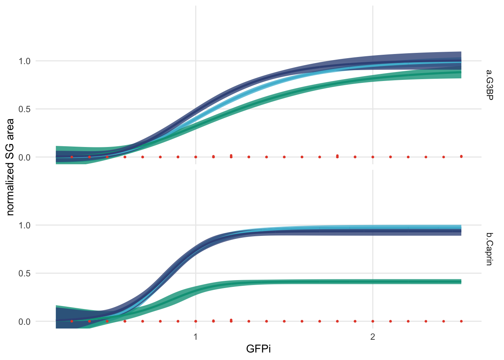
ggsave("./SG_DR_bAS_norm_DRre_conf.jpeg", SG_DR_bAS_norm_DRre_conf.plot, device = "jpeg", width = 60, height = 90, units = c("mm"))
ggsave("./SG_DR_bAS_norm_DRre_conf.ps", SG_DR_bAS_norm_DRre_conf.plot, device = "ps", width = 60, height = 90, units = c("mm"))Final fit as shown in Figure 5. Constructs combined. Fits shown as lines with 95% confidence interval.
2.4.5 SG drc stats
term_tribble <- tribble(~term, ~type,
"b", "steepness",
"d", "maxresponse")
drm_stats_f <- function(df1, df2){
df1_out <- df1 %>% ED(., 50) %>% as_tibble() %>% dplyr::select(., estimate = Estimate, std.error = contains("Error")) %>% unique() %>% dplyr::mutate(., type = "ED50")
df2_out <- df2 %>% left_join(., term_tribble) %>% dplyr::select(., type, estimate, std.error) %>% drop_na(., type)
df_out <- df1_out %>% add_row(., df2_out)
return(df_out)
}
SG_DR_bAS_norm_DRre_stats <- SG_DR_bAS_norm_DRre %>% left_join(., SG_facets) %>% dplyr::mutate(., drm_stats = purrr::pmap(list(drm_out, drm_tidy), drm_stats_f))##
## Estimated effective doses
##
## Estimate Std. Error
## e:plate21691:50 0.849147 0.020911
## e:plate21692:50 0.849147 0.020911
## e:plate21711:50 0.849147 0.020911
## e:plate21712:50 0.849147 0.020911
## e:plate21851:50 0.849147 0.020911
## e:plate21852:50 0.849147 0.020911
##
## Estimated effective doses
##
## Estimate Std. Error
## e:plate21691:50 1.103618 0.025875
## e:plate21692:50 1.103618 0.025875
## e:plate21711:50 1.103618 0.025875
## e:plate21712:50 1.103618 0.025875
## e:plate21851:50 1.103618 0.025875
## e:plate21852:50 1.103618 0.025875
##
## Estimated effective doses
##
## Estimate Std. Error
## e:plate21691:50 0.841437 0.080195
## e:plate21692:50 0.841437 0.080195
## e:plate21711:50 0.841437 0.080195
## e:plate21712:50 0.841437 0.080195
## e:plate21851:50 0.841437 0.080195
## e:plate21852:50 0.841437 0.080195
##
## Estimated effective doses
##
## Estimate Std. Error
## e:plate21691:50 1.186411 0.059493
## e:plate21692:50 1.186411 0.059493
## e:plate21711:50 1.186411 0.059493
## e:plate21712:50 1.186411 0.059493
## e:plate21851:50 1.186411 0.059493
## e:plate21852:50 1.186411 0.059493
##
## Estimated effective doses
##
## Estimate Std. Error
## e:plate21691:50 0.833152 0.027953
## e:plate21692:50 0.833152 0.027953
## e:plate21711:50 0.833152 0.027953
## e:plate21712:50 0.833152 0.027953
##
## Estimated effective doses
##
## Estimate Std. Error
## e:plate21691:50 1.027832 0.033035
## e:plate21692:50 1.027832 0.033035
## e:plate21711:50 1.027832 0.033035
## e:plate21712:50 1.027832 0.033035
## e:plate21851:50 1.027832 0.033035
## e:plate21852:50 1.027832 0.0330352.4.6 Cell numbers per bin
bin_min <- 0.6
bin_max <- 1.6
SG_datasel_unnested_ntf2_sum_GFPi_filtered_exp_count.plot <- SG_datasel_unnested_ntf2_sum_GFPi_filtered_exp.preplot %>% dplyr::group_by(., GFPbin_number, colorgroup) %>% dplyr::summarize(., ncells= sum(ncells)) %>% dplyr::mutate(., par = "ncells") %>% dplyr::mutate(bin_select = case_when(ncells < 5 ~ "discard", TRUE ~ "take")) %>% ggplot(data = .) + geom_col(aes(x = GFPbin_number, y = ncells, fill = bin_select), colour = "black", size = 0.5) +
#sn = force_plot$sample_number, y = ..count../sn
#coord_cartesian(xlim = c(0,20)) + #ylim = c(0, 0.02) ylim = c(0, 0.03)
scale_x_continuous("GFPi", n.breaks = 3, minor_breaks = NULL) +
scale_y_continuous("Cell Count", n.breaks = 3, minor_breaks = NULL) +
coord_cartesian(xlim=c(0,2.5)) +
#scale_fill_gradientn(colors = c("blue", "yellow", "red"), breaks= c(0.005, 0.01, 0.02)) +
#scale_fill_manual(., values = c("blue", "yellow", "red")) +
#scale_fill_gradientn(colors = hist_colors, limits = c(0,1), values = scales::rescale(c(0, 0.5, 0.75, 0.85, 1)), space = "Lab") + #
scale_fill_manual(., values = c("take" = "grey", "discard" = "white")) +
theme_minimal() +
theme(legend.position = "none") +
#scale_fill_continuous() +
#scale_fill_npg() +
facet_grid(par ~ colorgroup)
print(SG_datasel_unnested_ntf2_sum_GFPi_filtered_exp_count.plot)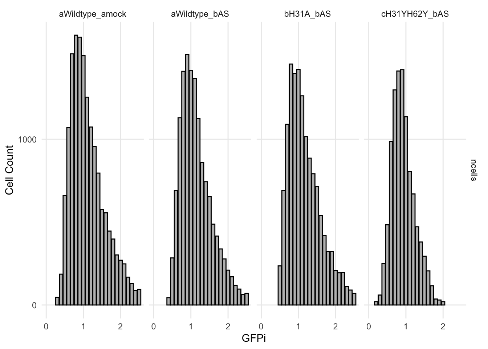
ggsave("./SG_datasel_cellcount.plot.jpeg", SG_datasel_unnested_ntf2_sum_GFPi_filtered_exp_count.plot, device = "jpeg", width = 160, height = 45, units = c("mm"))
ggsave("./SG_datasel_cellcount.plot.ps", SG_datasel_unnested_ntf2_sum_GFPi_filtered_exp_count.plot, device = "ps", width = 160, height = 45, units = c("mm"))Total cell numbers per bin. Not shown in ms.
SG_datasel_unnested_ntf2_sum_GFPi_filtered_exp_countexp.plot <- SG_datasel_unnested_ntf2_sum_GFPi_filtered_exp.preplot %>% dplyr::mutate(., colorgroup = paste(NTF2, condition, sep ="_")) %>% dplyr::group_by(., GFPbin_number, colorgroup, plate) %>% dplyr::summarize(., ncells= sum(ncells)) %>% dplyr::mutate(., par = "ncells") %>% dplyr::mutate(bin_select = case_when(ncells < 5 ~ "discard", TRUE ~ "take")) %>% ggplot(data = .) + geom_col(aes(x = GFPbin_number, y = ncells, fill = bin_select), colour = "black", size = 0.5) +
#sn = force_plot$sample_number, y = ..count../sn
#coord_cartesian(xlim = c(0,20)) + #ylim = c(0, 0.02) ylim = c(0, 0.03)
scale_x_continuous("GFPi", n.breaks = 3, minor_breaks = NULL) +
scale_y_continuous("Cell Count", n.breaks = 3, minor_breaks = NULL) +
coord_cartesian(xlim=c(0,2.5)) +
#scale_fill_gradientn(colors = c("blue", "yellow", "red"), breaks= c(0.005, 0.01, 0.02)) +
#scale_fill_manual(., values = c("blue", "yellow", "red")) +
#scale_fill_gradientn(colors = hist_colors, limits = c(0,1), values = scales::rescale(c(0, 0.5, 0.75, 0.85, 1)), space = "Lab") + #
scale_fill_manual(., values = c("take" = "grey", "discard" = "white")) +
theme_minimal() +
theme(legend.position = "none") +
#scale_fill_continuous() +
#scale_fill_npg() +
facet_grid(plate ~ colorgroup, scales = "free_y")
print(SG_datasel_unnested_ntf2_sum_GFPi_filtered_exp_countexp.plot)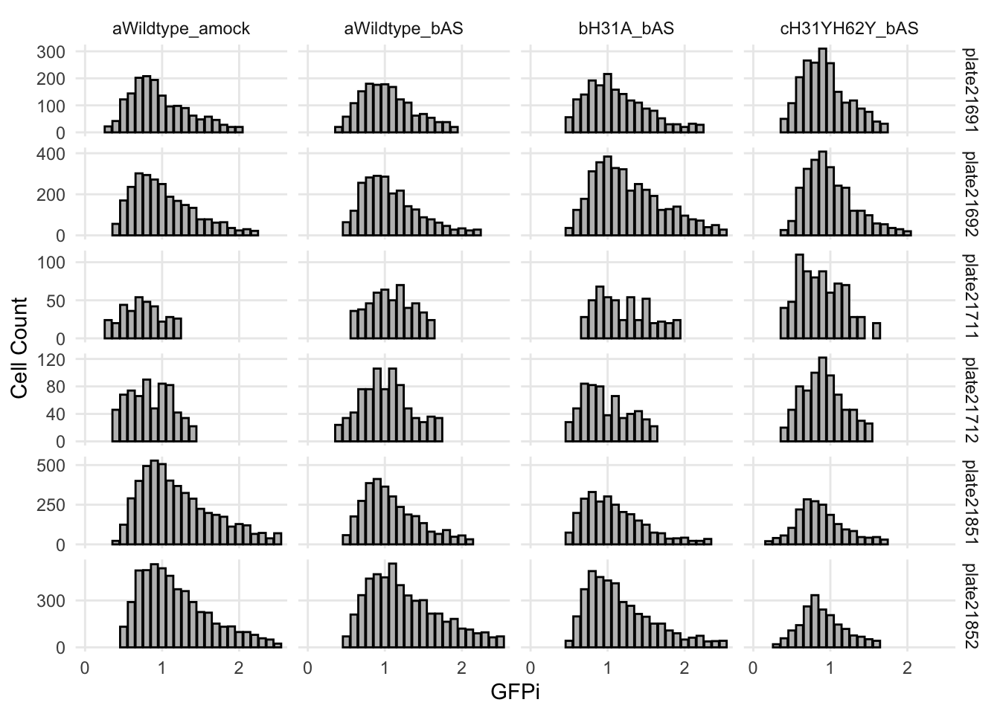
ggsave("./SG_datasel_cellcount.plate_plot.jpeg", SG_datasel_unnested_ntf2_sum_GFPi_filtered_exp_countexp.plot, device = "jpeg", width = 160, height = 90, units = c("mm"))
ggsave("./SG_datasel_cellcount.plate_plot.ps", SG_datasel_unnested_ntf2_sum_GFPi_filtered_exp_countexp.plot, device = "ps", width = 160, height = 90, units = c("mm"))Cell numbers per bin per experiment. Not shown in ms.
3 analysis of LLPS
Data were analyzed similarly to cellular SG condensates. However, MD Panas has pre-analyzed the data and excel sheets instead of Cellprofiler tables were imported.
3.1 import data
drm_LLPS_f <- function(df){
data <- df %>% dplyr::mutate(., value = AreaOcc/AreaTot)
drm_out <- drm(value ~ conc_uM, filename, data = data, fct = L.5(), pmodels = list(~1, ~filename-1, ~filename-1, ~1, ~1), lowerl = c(-Inf, 0, -Inf, -Inf, -Inf), upperl = c(Inf, 0.001, Inf, Inf, Inf))
return(drm_out)
}
LLPS_NTF2names <- tribble(~NTF2name, ~NTF2,
"G3BP1-2Y", "cH31YH62Y",
"G3BP1-H31A", "bH31A",
"G3BP1-wt", "aWT")
LLPS_list <- list.files(path = "./data_LLPS", pattern = "*", recursive = TRUE, include.dirs = TRUE, full.names = TRUE)
LLPS_data.tib <- as_tibble(LLPS_list)
LLPS_coladd <- tribble(~filename, ~datasetid, ~range, ~colnames, ~collection,
as_tibble(c("LLPS_01.xlsx", "LLPS_02.xlsx", "LLPS_03.xlsx", "LLPS_04.xlsx")), "Sheet1", "B5:G100", c("NTF2name", "conc_uM", "AreaOcc", "AreaTot", "Nobj", "ImgN"), "MP1")
LLPS_coladd <- LLPS_coladd %>% unnest(., filename) %>% dplyr::mutate(., filename = value) %>% dplyr::select(., !c("value"))
LLPS_data_excel.tib <- LLPS_data.tib %>% separate(., value, into= c("dot", "folder", "filename"), sep = "/", remove = FALSE) %>% left_join(., LLPS_coladd) %>% dplyr::mutate(., data = purrr::pmap(list(value, datasetid, range, colnames), read_xlsx))
LLPS_data_analysis.tib <- LLPS_data_excel.tib %>% dplyr::select(., filename, data) %>% unnest(., data) %>% drop_na(., everything()) %>% left_join(., LLPS_NTF2names) %>% dplyr::group_by(., NTF2) %>% dplyr::select(., !c("NTF2name")) %>% nest() %>% dplyr::mutate(., drm_out = purrr::map(data, ~drm_LLPS_f(.)))3.2 LLPS condensate responses
LLPS_filenames <- LLPS_coladd %>% dplyr::group_by(., filename) %>% dplyr::summarize() %>% pull()
LLPS_predict_values <- expand.grid(conc_uM =c(seq(0,30, 1)), filename = LLPS_filenames)
LLPS_predict_values_augment <- LLPS_predict_values %>% as_tibble(.)
drm_LLPS_predict_f <- function(df){
data <- df
drm_predict <- predict(data, LLPS_predict_values) %>% as_tibble()
drm_predict_out <- LLPS_predict_values %>% as_tibble() %>% add_column(., drm_predict)
return(drm_predict_out)
}
LLPS_predict_norm_values <- expand.grid(conc_uM =c(seq(0,30, 1)))
drm_predict_LLPS_norm_f <- function(df){
data <- df
drm_predict <- predict(data, LLPS_predict_norm_values) %>% as_tibble()
drm_predict_out <- LLPS_predict_values %>% as_tibble() %>% add_column(., drm_predict)
return(drm_predict_out)
}
combine_LLPS_pred_f <- function(data, drm_pred){
data_groups <- data %>% dplyr::group_by(., filename) %>% dplyr::summarize()
drm_pred_out <- drm_pred %>% left_join(., data_groups)
return(drm_pred_out)
}
LLPS_data_analysis_norm.tib <- LLPS_data_analysis.tib %>% dplyr::mutate(., drm_pred_temp = purrr::pmap(list(drm_out),drm_LLPS_predict_f)) %>% dplyr::mutate(., drm_pred = purrr::pmap(list(data, drm_pred_temp),combine_LLPS_pred_f)) %>% dplyr::mutate(., drm_tidy = purrr::pmap(list(drm_out),tidy))LLPS_DR_bAS.plot <- LLPS_data_analysis_norm.tib %>% dplyr::mutate(., data_value = purrr::map(data, ~dplyr::mutate(., value = AreaOcc/AreaTot))) %>% ggplot() +
geom_line(data = . %>% dplyr::select(., !c("data", "drm_out")) %>% unnest(., drm_pred), aes(x = conc_uM, y = value, colour = factor(filename)), size = 1 ) +
geom_point(data = . %>% dplyr::select(., !c("drm_out", "drm_pred")) %>% unnest(., data_value), aes(x = conc_uM, y = value, colour = factor(filename)), size = 2 ) +
#geom_line(data = SG_datasel_unnested_ntf2_sum_GFPi_filtered_exp.preplot %>% left_join(., SG_facets) %>% left_join(., ncells_alpha_line) %>% dplyr::filter(., ncell_cut > 200), aes(x = GFPbin_number, y = value, colour = factor(colorgroup), group = plategroup), size = 0.5 ) +
#geom_ribbon(data = SG_datasel_unnested_ntf2_sum_GFPi_filtered_exp.preplot %>% group_by(., NTF2, condition, colorgroup, GFPbin_number, name) %>% dplyr::summarize(., ymin = min(value), ymax = (max(value))) %>% left_join(., SG_facets), aes(x = GFPbin_number, ymin = ymin, ymax = ymax, fill = factor(colorgroup)), alpha = 0.25 ) +
scale_y_continuous("SG area: %", n.breaks = 3, minor_breaks = NULL) + #breaks = c(0, 500, 1000)) +
scale_x_continuous("c(G3BP)", n.breaks=4, minor_breaks = NULL) +
theme_minimal() +
#theme(legend.position = "none") +
scale_color_brewer(palette = "Paired") +
#scale_fill_npg() +
facet_grid(. ~ NTF2)
print(LLPS_DR_bAS.plot)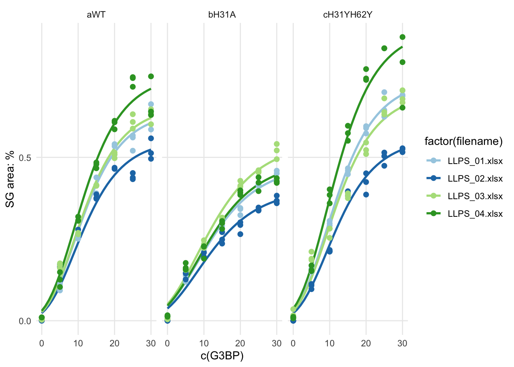
ggsave("./LLPS_DR_bAS.jpeg", LLPS_DR_bAS.plot, device = "jpeg", width = 160, height = 90, units = c("mm"))
ggsave("./LLPS_DR_bAS.ps", LLPS_DR_bAS.plot, device = "ps", width = 160, height = 90, units = c("mm"))LLPS condensate size versus concentration. Included DRC fits (line).
3.3 LLPS condensates normalized to wild-type
LLPS_response_norm <- LLPS_data_analysis_norm.tib %>% dplyr::select(., NTF2, drm_tidy) %>% unnest(., drm_tidy) %>% dplyr::filter(., NTF2 == "aWT", term == "d") %>% dplyr::select(., NTF2, curve, value = estimate) %>% dplyr::mutate(., filename = str_replace(curve, "filename", "")) %>% ungroup() %>% dplyr::select(., !c("curve", "NTF2")) %>% dplyr::select(., norm = value, filename)
LLPS_normalize_f <- function(df){
df_out <- df %>% dplyr::mutate(., value_old = value) %>% dplyr::select(., !c("value")) %>% dplyr::mutate(., value = value_old/norm) %>%
return(df_out)
}
LLPS_DR_bAS_norm <- LLPS_data_analysis_norm.tib %>% dplyr::mutate(., data_value = purrr::map(data, ~dplyr::mutate(., value = AreaOcc/AreaTot))) %>% dplyr::select(., NTF2, data = data_value) %>% unnest(., data) %>% left_join(., LLPS_response_norm) %>% dplyr::group_by(., NTF2) %>% nest() %>% dplyr::mutate(., data_norm = purrr::pmap(list(data), LLPS_normalize_f)) LLPS_DR_bAS_norm.plot <- LLPS_DR_bAS_norm %>% ggplot() +
#geom_line(data = . %>% dplyr::select(., c("NTF2", "condition", "name", "data_norm")) %>% unnest(., data_norm), aes(x = GFPbin_number, y = value, colour = factor(plate)), size = 1 ) +
geom_point(data = . %>% dplyr::select(., c("NTF2", "data_norm")) %>% unnest(., data_norm), aes(x = conc_uM, y = value, colour = factor(filename)), size = 2 ) +
#geom_line(data = SG_datasel_unnested_ntf2_sum_GFPi_filtered_exp.preplot %>% left_join(., SG_facets) %>% left_join(., ncells_alpha_line) %>% dplyr::filter(., ncell_cut > 200), aes(x = GFPbin_number, y = value, colour = factor(colorgroup), group = plategroup), size = 0.5 ) +
#geom_ribbon(data = SG_datasel_unnested_ntf2_sum_GFPi_filtered_exp.preplot %>% group_by(., NTF2, condition, colorgroup, GFPbin_number, name) %>% dplyr::summarize(., ymin = min(value), ymax = (max(value))) %>% left_join(., SG_facets), aes(x = GFPbin_number, ymin = ymin, ymax = ymax, fill = factor(colorgroup)), alpha = 0.25 ) +
scale_y_continuous("normalized SG area", n.breaks = 3, minor_breaks = NULL) + #breaks = c(0, 500, 1000)) +
scale_x_continuous("c(G3BP)", n.breaks = 3, minor_breaks = NULL) +
theme_minimal() +
#theme(legend.position = "none") +
scale_color_brewer(palette = "Paired") +
#scale_fill_npg() +
facet_grid(. ~ NTF2)
print(LLPS_DR_bAS_norm.plot)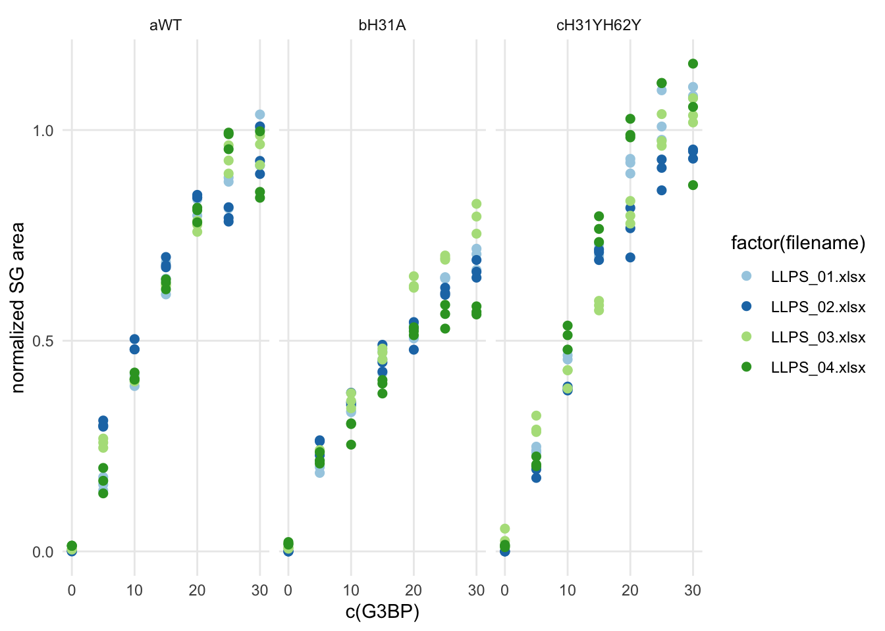
ggsave("./LLPS_DR_bAS_norm.jpeg", LLPS_DR_bAS_norm.plot, device = "jpeg", width = 160, height = 90, units = c("mm"))
ggsave("./LLPS_DR_bAS_norm.ps", LLPS_DR_bAS_norm.plot, device = "ps", width = 160, height = 90, units = c("mm"))LLPS condensate size versus concentration, normalized to wild-type max response.
3.4 Fit to normalized data
drm_norm_LLPS_f <- function(df){
data <- df
drm_out <- drm(value ~ conc_uM, filename, data = data, fct = L.5(), pmodels = list(~1, ~1, ~1, ~1, ~1), lowerl = c(-Inf, 0, -Inf, -Inf, -Inf), upperl = c(Inf, 0.01, Inf, Inf, Inf))
return(drm_out)
}
drm_predictnorm_LLPS_f <- function(df, predict_values){
data <- df
drm_predict <- predict(data, predict_values) %>% as_tibble()
drm_predict_out <- predict_values %>% as_tibble() %>% add_column(., drm_predict)
return(drm_predict_out)
}
drm_predictnorm_LLPS_conf_f <- function(df, predict_values){
data <- df
drm_predict <- predict(data, predict_values, interval = "confidence", vcov.dcr=sandwich) %>% as_tibble()
drm_predict_out <- predict_values %>% as_tibble() %>% add_column(., drm_predict) %>% dplyr::select(., !c("filename")) %>% unique()
return(drm_predict_out)
}
###modify function
#filter_data_f <- function(data, filtername){
# data_out <- data %>% dplyr::mutate_at(c("plate"), ~str_replace_all(., pattern = {{filtername}}, replacement = "filterme")) %>% dplyr::filter(., plate != "filterme")
# return(data_out)
#}
grid_predictvalues_LLPS_f <- function(data){
filename <- data %>% dplyr::group_by(filename) %>% dplyr::summarize() %>% deframe()
predict_values <- expand.grid(conc_uM =c(seq(0,30, 1)), filename = filename)
return(predict_values)
}
augment_f <- function(df1, predict_values_augment){
data_out <- df1 %>% augment(., newdata = predict_values_augment, conf.int = TRUE)
return(data_out)
}
###apply right_join instead
#filter_dataset <- tribble(~NTF2, ~name, ~filtername,
# "cH31YH62Y", "CaprinSGarea", "plate21851|plate21852")
LLPS_DR_bAS_norm_DRre <- LLPS_DR_bAS_norm %>% dplyr::mutate(., data_normOLD = data_norm) %>% dplyr::select(., NTF2, data, data_normOLD, data_norm) %>% dplyr::mutate(., predict_values = purrr::map(data_norm, ~grid_predictvalues_LLPS_f(.))) %>% dplyr::mutate(., drm_out = purrr::pmap(list(data_norm),drm_norm_LLPS_f)) %>% dplyr::mutate(., drm_pred_temp = purrr::pmap(list(drm_out, predict_values),drm_predictnorm_LLPS_f), drm_predconf_temp = purrr::pmap(list(drm_out, predict_values),drm_predictnorm_LLPS_conf_f)) %>% dplyr::mutate(., drm_tidy = purrr::pmap(list(drm_out),tidy)) LLPS_DR_bAS_norm_DRre_conf.plot <- ggplot() +
geom_ribbon(data = LLPS_DR_bAS_norm_DRre %>% dplyr::mutate_at(c("NTF2"), ~str_replace_all(., "aWT", "aWildtype")) %>% dplyr::mutate(., facetname = "a.G3BP") %>% dplyr::select(., c("NTF2", "facetname", "drm_predconf_temp")) %>% unnest(., drm_predconf_temp) %>% dplyr::mutate(., value = Prediction) %>% inner_join(., colorgroup_join), aes(x = conc_uM, ymin = Lower, ymax = Upper, fill = factor(colorgroup)), alpha = 0.8) +
geom_line(data = LLPS_DR_bAS_norm_DRre %>% dplyr::mutate_at(c("NTF2"), ~str_replace_all(., "aWT", "aWildtype")) %>% dplyr::mutate(., facetname = "a.G3BP") %>% dplyr::select(., c("NTF2", "facetname", "drm_predconf_temp")) %>% unnest(., drm_predconf_temp) %>% dplyr::mutate(., value = Prediction) %>% inner_join(., colorgroup_join), aes(x = conc_uM, y = value, fill = factor(colorgroup), colour = factor(colorgroup)), size = 1 ) +
#geom_point(data = SG_DR_bAS_norm %>% left_join(., SG_facets) %>% dplyr::select(., c("NTF2", "condition", "name", "facetname", "data_norm")) %>% unnest(., data_norm) %>% dplyr::filter(., NTF2 == "aWildtype", condition == "amock"), aes(x = GFPbin_number, y = value, fill = factor(colorgroup), color = factor(colorgroup)), size = 0.5 ) +
# +
scale_y_continuous("normalized area", breaks = c(0,0.5,1), minor_breaks = NULL) + #breaks = c(0, 500, 1000)) +
scale_x_continuous("c(G3BP1)", n.breaks = 5, minor_breaks = NULL) +
coord_cartesian(ylim = c(0,1.5)) +
#coord_cartesian(ylim(0,1.5)) +
theme_minimal() +
theme(legend.position = "none") +
#scale_color_brewer(palette = "Paired") +
scale_color_npg() +
#scale_fill_manual(., values = npg_manual_scale) +
scale_fill_npg() +
facet_grid(facetname ~ .)
print(LLPS_DR_bAS_norm_DRre_conf.plot)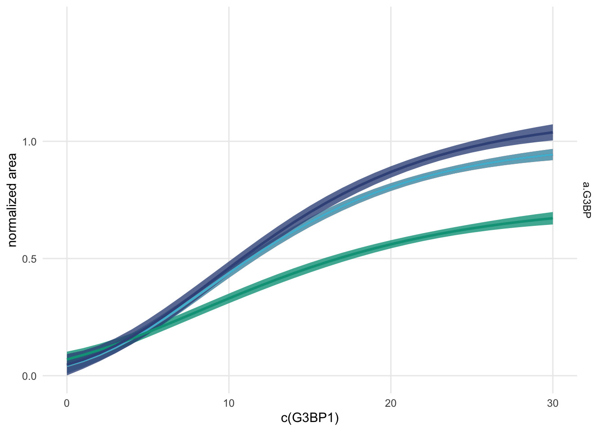
ggsave("./LLPS_DR_bAS_norm_DRre_conf.jpeg", LLPS_DR_bAS_norm_DRre_conf.plot, device = "jpeg", width = 60, height = 90, units = c("mm"))
ggsave("./LLPS_DR_bAS_norm_DRre_conf.ps", LLPS_DR_bAS_norm_DRre_conf.plot, device = "ps", width = 60, height = 90, units = c("mm"))DRC fits to normalized LLPS condensate size versus concentration. With 95% confidence intervals.
4 Final plot
mainPlot.plot <- egg::ggarrange(SG_datasel_unnested_ntf2_sum_GFPi_filtered_exp_count.plot, LLPS_DR_bAS_norm_DRre_conf.plot, SG_DR_bAS_norm_DRre.plot, SG_DR_bAS_norm_DRre_conf.plot , nrow = 2, ncol = 2, heights = c(1,2), widths = c(4,1))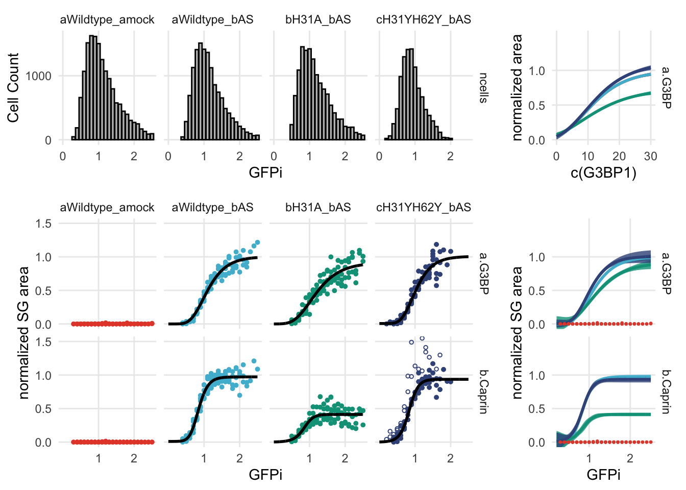
#(plotlist = list(), nrow = 1, ncol = 4, legend = "none")
ggsave(file="mainPlot.jpeg", plot=mainPlot.plot,device="jpeg", width = 200, height = 90, units = c("mm"))
ggsave(file="mainPlot.ps", plot=mainPlot.plot,device="ps", width = 200, height = 90, units = c("mm"))
ggsave(file="mainPlot.pdf", plot=mainPlot.plot,device="pdf", width = 200, height = 90, units = c("mm"))
ggsave(file="mainPlot.svg", plot=mainPlot.plot,device="svg", width = 200, height = 90, units = c("mm"))Assembled figures for Figure 5.
Plots were saved as postscript files, and edited into publication-quality figures using Adobe Illustrator.
The bookdown document was created based on bookdown, and rtemps.
Note that the echo = FALSE parameter was added to the code chunk to prevent printing of the R code that generated the plot.